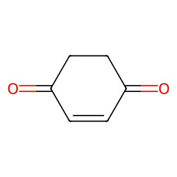
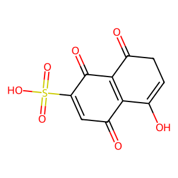
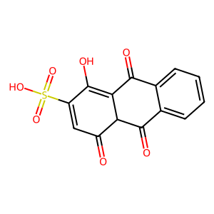
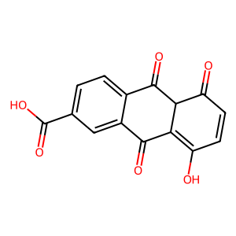
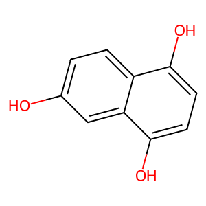
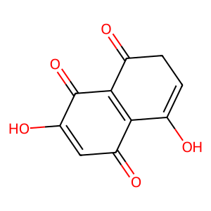
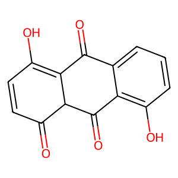
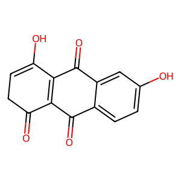
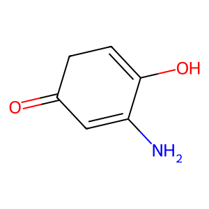

| Reactant | Reactant SMILES |
Product | Product SMILES | ElementaryStepName | Reaction Energy |
Product | Product SMILES | ElementaryStepName | Reaction Energy |
| Oc1ccc(O)cc1 | | O=C1C=CC(O)=CC1 | Tautomerism step1 | |  | O=C1C=CC(=O)CC1 | Tautomerism step2 | |
 | Oc1ccc(O)c2ccccc12 | | O=C1CC=C(O)c2ccccc21 | Tautomerism step1 | | | O=C1CCC(=O)c2ccccc21 | Tautomerism step2 | |
 | O=C1C=CC(=O)c2c(O)ccc(O)c21 | | O=C1C=CC(=O)C2C(=O)C=CC(O)=C12 | Tautomerism step1 | | | O=C1C=CC(=O)C2C(=O)C=CC(=O)C12 | Tautomerism step2 | |
| O=C1C=CC(=O)c2c(O)ccc(O)c21 | | O=C1C=CC(=O)C2=C1C(=O)CC=C2O | Tautomerism step1 | | | O=C1C=CC(=O)C2=C1C(=O)CCC2=O | Tautomerism step2 | |
 | Oc1c2ccccc2c(O)c2ccccc12 | | O=C1c2ccccc2C(O)=C2C=CC=CC12 | Tautomerism step1 | | | O=C1c2ccccc2C(=O)C2C=CC=CC12 | Tautomerism step2 | |
| Oc1ccc(O)c2cc3ccccc3cc12 | | O=C1CC=C(O)c2cc3ccccc3cc21 | Tautomerism step1 | | | O=C1CCC(=O)c2cc3ccccc3cc21 | Tautomerism step2 | |
 | O=C1C=CC(=O)c2cc3c(O)ccc(O)c3cc21 | | O=C1C=CC(=O)c2cc3c(cc21)C(=O)CC=C3O | Tautomerism step1 | | | O=C1C=CC(=O)c2cc3c(cc21)C(=O)CCC3=O | Tautomerism step2 | |
 | O=C1C=CC(=O)c2c1c(O)c1ccccc1c2O | | O=C1C=CC(=O)C2C(=O)c3ccccc3C(O)=C12 | Tautomerism step1 | |  | O=C1C=CC(=O)C2C(=O)c3ccccc3C(=O)C12 | Tautomerism step2 | |
| O=C1C=CC(=O)c2c1c(O)c1ccccc1c2O | | O=C1C=CC(=O)C2=C1C(=O)C1C=CC=CC1=C2O | Tautomerism step1 | | | O=C1C=CC(=O)C2=C1C(=O)C1C=CC=CC1C2=O | Tautomerism step2 | |
| O=C1c2ccccc2C(=O)c2c(O)ccc(O)c21 | | O=C1C2=C(O)C=CC(=O)C2C(=O)c2ccccc21 | Tautomerism step1 | | | O=C1C=CC(=O)C2C(=O)c3ccccc3C(=O)C12 | Tautomerism step2 | |
 | O=C1c2ccccc2C(=O)c2c(O)ccc(O)c21 | | O=C1CC=C(O)C2=C1C(=O)c1ccccc1C2=O | Tautomerism step1 | | | O=C1CCC(=O)C2=C1C(=O)c1ccccc1C2=O | Tautomerism step2 | |
| O=S(=O)(O)c1cc(O)ccc1O | | O=C1C=CC(O)=C(S(=O)(=O)O)C1 | Tautomerism step1 | | | O=C1C=CC(=O)C(S(=O)(=O)O)C1 | Tautomerism step2 | |
 | O=S(=O)(O)c1cc(O)ccc1O | | O=C1CC=C(O)C=C1S(=O)(=O)O | Tautomerism step1 | |  | O=C1C=C(S(=O)(=O)O)C(=O)CC1 | Tautomerism step2 | |
 | O=S(=O)(O)c1cc(O)ccc1O | | O=C1C=CC(O)=CC1S(=O)(=O)O | Tautomerism step1 | |  | O=C1C=CC(=O)C(S(=O)(=O)O)C1 | Tautomerism step2 | |
 | O=S(=O)(O)c1cc(O)ccc1O | | O=C1C=C(S(=O)(=O)O)C(O)=CC1 | Tautomerism step1 | | | O=C1C=C(S(=O)(=O)O)C(=O)CC1 | Tautomerism step2 | |
 | O=S(=O)(O)c1cccc2c(O)ccc(O)c12 | | O=C1CC=C(O)c2cccc(S(=O)(=O)O)c21 | Tautomerism step1 | | | O=C1CCC(=O)c2c1cccc2S(=O)(=O)O | Tautomerism step2 | |
 | O=S(=O)(O)c1cccc2c(O)ccc(O)c12 | | O=C1CC=C(O)c2c1cccc2S(=O)(=O)O | Tautomerism step1 | |  | O=C1CCC(=O)c2c1cccc2S(=O)(=O)O | Tautomerism step2 | |
 | O=S(=O)(O)c1ccc2c(O)ccc(O)c2c1 | | O=C1CC=C(O)c2ccc(S(=O)(=O)O)cc21 | Tautomerism step1 | |  | O=C1CCC(=O)c2cc(S(=O)(=O)O)ccc21 | Tautomerism step2 | |
 | O=S(=O)(O)c1ccc2c(O)ccc(O)c2c1 | | O=C1CC=C(O)c2cc(S(=O)(=O)O)ccc21 | Tautomerism step1 | | | O=C1CCC(=O)c2cc(S(=O)(=O)O)ccc21 | Tautomerism step2 | |
 | O=S(=O)(O)c1cc(O)c2ccccc2c1O | | O=C1CC(S(=O)(=O)O)=C(O)c2ccccc21 | Tautomerism step1 | |  | O=C1CC(S(=O)(=O)O)C(=O)c2ccccc21 | Tautomerism step2 | |
| O=S(=O)(O)c1cc(O)c2ccccc2c1O | | O=C1c2ccccc2C(O)=CC1S(=O)(=O)O | Tautomerism step1 | | | O=C1CC(S(=O)(=O)O)C(=O)c2ccccc21 | Tautomerism step2 | |
 | O=C1C=C(S(=O)(=O)O)C(=O)c2c(O)ccc(O)c21 | | O=C1C=C(S(=O)(=O)O)C(=O)C2C(=O)C=CC(O)=C12 | Tautomerism step1 | | | O=C1C=CC(=O)C2C(=O)C(S(=O)(=O)O)=CC(=O)C12 | Tautomerism step2 | |
 | O=C1C=C(S(=O)(=O)O)C(=O)c2c(O)ccc(O)c21 | | O=C1C=C(S(=O)(=O)O)C(=O)C2=C1C(=O)CC=C2O | Tautomerism step1 | | | O=C1C=C(S(=O)(=O)O)C(=O)C2=C1C(=O)CCC2=O | Tautomerism step2 | |
 | O=C1C=C(S(=O)(=O)O)C(=O)c2c(O)ccc(O)c21 |  | O=C1C=C(S(=O)(=O)O)C(=O)C2=C1C(O)=CCC2=O | Tautomerism step1 | |  | O=C1C=C(S(=O)(=O)O)C(=O)C2=C1C(=O)CCC2=O | Tautomerism step2 | |
 | O=C1C=C(S(=O)(=O)O)C(=O)c2c(O)ccc(O)c21 | | O=C1C(S(=O)(=O)O)=CC(=O)C2C(=O)C=CC(O)=C12 | Tautomerism step1 | |  | O=C1C=CC(=O)C2C(=O)C(S(=O)(=O)O)=CC(=O)C12 | Tautomerism step2 | |
 | O=C1C=CC(=O)c2c(O)c(S(=O)(=O)O)cc(O)c21 | | O=C1C=CC(=O)C2C(=O)C(S(=O)(=O)O)=CC(O)=C12 | Tautomerism step1 | |  | O=C1C=CC(=O)C2C(=O)C(S(=O)(=O)O)=CC(=O)C12 | Tautomerism step2 | |
| O=C1C=CC(=O)c2c(O)c(S(=O)(=O)O)cc(O)c21 | | O=C1C=CC(=O)C2C(=O)C=C(S(=O)(=O)O)C(O)=C12 | Tautomerism step1 | |  | O=C1C=CC(=O)C2C(=O)C(S(=O)(=O)O)=CC(=O)C12 | Tautomerism step2 | |
 | O=C1C=CC(=O)c2c(O)c(S(=O)(=O)O)cc(O)c21 | | O=C1C=CC(=O)C2=C1C(=O)CC(S(=O)(=O)O)=C2O | Tautomerism step1 | |  | O=C1C=CC(=O)C2=C1C(=O)CC(S(=O)(=O)O)C2=O | Tautomerism step2 | |
 | O=C1C=CC(=O)c2c(O)c(S(=O)(=O)O)cc(O)c21 | | O=C1C=CC(=O)C2=C1C(=O)C(S(=O)(=O)O)C=C2O | Tautomerism step1 | | | O=C1C=CC(=O)C2=C1C(=O)CC(S(=O)(=O)O)C2=O | Tautomerism step2 | |
 | O=S(=O)(O)c1cccc2c(O)c3ccccc3c(O)c12 | | O=C1c2c(cccc2S(=O)(=O)O)C(O)=C2C=CC=CC12 | Tautomerism step1 | | | O=C1c2cccc(S(=O)(=O)O)c2C(=O)C2C=CC=CC12 | Tautomerism step2 | |
 | O=S(=O)(O)c1cccc2c(O)c3ccccc3c(O)c12 | | O=C1c2ccccc2C(O)=C2C=CC=C(S(=O)(=O)O)C12 | Tautomerism step1 | |  | O=C1c2ccccc2C(=O)C2C(S(=O)(=O)O)=CC=CC12 | Tautomerism step2 | |
 | O=S(=O)(O)c1cccc2c(O)c3ccccc3c(O)c12 | | O=C1c2ccccc2C(O)=C2C(S(=O)(=O)O)=CC=CC12 | Tautomerism step1 | | | O=C1c2ccccc2C(=O)C2C(S(=O)(=O)O)=CC=CC12 | Tautomerism step2 | |
| O=S(=O)(O)c1cccc2c(O)c3ccccc3c(O)c12 | | O=C1c2cccc(S(=O)(=O)O)c2C(O)=C2C=CC=CC12 | Tautomerism step1 | |  | O=C1c2cccc(S(=O)(=O)O)c2C(=O)C2C=CC=CC12 | Tautomerism step2 | |
 | O=S(=O)(O)c1ccc2c(O)c3ccccc3c(O)c2c1 | | O=C1c2cc(S(=O)(=O)O)ccc2C(O)=C2C=CC=CC12 | Tautomerism step1 | | | O=C1c2ccc(S(=O)(=O)O)cc2C(=O)C2C=CC=CC12 | Tautomerism step2 | |
 | O=S(=O)(O)c1ccc2c(O)c3ccccc3c(O)c2c1 | | O=C1c2ccccc2C(O)=C2C=CC(S(=O)(=O)O)=CC12 | Tautomerism step1 | | | O=C1c2ccccc2C(=O)C2C=C(S(=O)(=O)O)C=CC12 | Tautomerism step2 | |
 | O=S(=O)(O)c1ccc2c(O)c3ccccc3c(O)c2c1 | | O=C1c2ccc(S(=O)(=O)O)cc2C(O)=C2C=CC=CC12 | Tautomerism step1 | |  | O=C1c2ccc(S(=O)(=O)O)cc2C(=O)C2C=CC=CC12 | Tautomerism step2 | |
| O=S(=O)(O)c1ccc2c(O)c3ccccc3c(O)c2c1 | | O=C1c2ccccc2C(O)=C2C=C(S(=O)(=O)O)C=CC12 | Tautomerism step1 | |  | O=C1c2ccccc2C(=O)C2C=C(S(=O)(=O)O)C=CC12 | Tautomerism step2 | |
| O=S(=O)(O)c1c2ccccc2cc2c(O)ccc(O)c12 | | O=C1CC=C(O)c2c1cc1ccccc1c2S(=O)(=O)O | Tautomerism step1 | |  | O=C1CCC(=O)c2c1cc1ccccc1c2S(=O)(=O)O | Tautomerism step2 | |
 | O=S(=O)(O)c1c2ccccc2cc2c(O)ccc(O)c12 | | O=C1CC=C(O)c2cc3ccccc3c(S(=O)(=O)O)c21 | Tautomerism step1 | | | O=C1CCC(=O)c2c1cc1ccccc1c2S(=O)(=O)O | Tautomerism step2 | |
 | O=S(=O)(O)c1cccc2cc3c(O)ccc(O)c3cc12 | | O=C1CC=C(O)c2cc3cccc(S(=O)(=O)O)c3cc21 | Tautomerism step1 | |  | O=C1CCC(=O)c2cc3c(S(=O)(=O)O)cccc3cc21 | Tautomerism step2 | |
 | O=S(=O)(O)c1cccc2cc3c(O)ccc(O)c3cc12 | | O=C1CC=C(O)c2cc3c(S(=O)(=O)O)cccc3cc21 | Tautomerism step1 | | | O=C1CCC(=O)c2cc3c(S(=O)(=O)O)cccc3cc21 | Tautomerism step2 | |
 | O=S(=O)(O)c1ccc2cc3c(O)ccc(O)c3cc2c1 | | O=C1CC=C(O)c2cc3cc(S(=O)(=O)O)ccc3cc21 | Tautomerism step1 | | | O=C1CCC(=O)c2cc3cc(S(=O)(=O)O)ccc3cc21 | Tautomerism step2 | |
| O=S(=O)(O)c1ccc2cc3c(O)ccc(O)c3cc2c1 | | O=C1CC=C(O)c2cc3ccc(S(=O)(=O)O)cc3cc21 | Tautomerism step1 | |  | O=C1CCC(=O)c2cc3cc(S(=O)(=O)O)ccc3cc21 | Tautomerism step2 | |
| O=S(=O)(O)c1cc(O)c2cc3ccccc3cc2c1O | | O=C1c2cc3ccccc3cc2C(O)=CC1S(=O)(=O)O | Tautomerism step1 | | | O=C1CC(S(=O)(=O)O)C(=O)c2cc3ccccc3cc21 | Tautomerism step2 | |
 | O=S(=O)(O)c1cc(O)c2cc3ccccc3cc2c1O | | O=C1CC(S(=O)(=O)O)=C(O)c2cc3ccccc3cc21 | Tautomerism step1 | |  | O=C1CC(S(=O)(=O)O)C(=O)c2cc3ccccc3cc21 | Tautomerism step2 | |
 | O=C1C=CC(=O)c2c1c(O)c1cccc(S(=O)(=O)O)c1c2O | | O=C1C=CC(=O)C2C(=O)c3c(cccc3S(=O)(=O)O)C(O)=C12 | Tautomerism step1 | | | O=C1C=CC(=O)C2C(=O)c3c(cccc3S(=O)(=O)O)C(=O)C12 | Tautomerism step2 | |
 | O=C1C=CC(=O)c2c1c(O)c1cccc(S(=O)(=O)O)c1c2O | | O=C1C=CC(=O)C2C(=O)c3cccc(S(=O)(=O)O)c3C(O)=C12 | Tautomerism step1 | |  | O=C1C=CC(=O)C2C(=O)c3c(cccc3S(=O)(=O)O)C(=O)C12 | Tautomerism step2 | |
 | O=C1C=CC(=O)c2c1c(O)c1cccc(S(=O)(=O)O)c1c2O | | O=C1C=CC(=O)C2=C1C(=O)C1C(S(=O)(=O)O)=CC=CC1=C2O | Tautomerism step1 | |  | O=C1C=CC(=O)C2=C1C(=O)C1C=CC=C(S(=O)(=O)O)C1C2=O | Tautomerism step2 | |
 | O=C1C=CC(=O)c2c1c(O)c1cccc(S(=O)(=O)O)c1c2O | | O=C1C=CC(=O)C2=C1C(=O)C1C=CC=C(S(=O)(=O)O)C1=C2O | Tautomerism step1 | | | O=C1C=CC(=O)C2=C1C(=O)C1C=CC=C(S(=O)(=O)O)C1C2=O | Tautomerism step2 | |
 | O=C1c2cccc(S(=O)(=O)O)c2C(=O)c2c(O)ccc(O)c21 | | O=C1C2=C(O)C=CC(=O)C2C(=O)c2cccc(S(=O)(=O)O)c21 | Tautomerism step1 | |  | O=C1C=CC(=O)C2C(=O)c3c(cccc3S(=O)(=O)O)C(=O)C12 | Tautomerism step2 | |
 | O=C1c2cccc(S(=O)(=O)O)c2C(=O)c2c(O)ccc(O)c21 | | O=C1CC=C(O)C2=C1C(=O)c1c(cccc1S(=O)(=O)O)C2=O | Tautomerism step1 | | | O=C1CCC(=O)C2=C1C(=O)c1cccc(S(=O)(=O)O)c1C2=O | Tautomerism step2 | |
 | O=C1c2cccc(S(=O)(=O)O)c2C(=O)c2c(O)ccc(O)c21 | | O=C1CC=C(O)C2=C1C(=O)c1cccc(S(=O)(=O)O)c1C2=O | Tautomerism step1 | |  | O=C1CCC(=O)C2=C1C(=O)c1cccc(S(=O)(=O)O)c1C2=O | Tautomerism step2 | |
 | O=C1c2cccc(S(=O)(=O)O)c2C(=O)c2c(O)ccc(O)c21 | | O=C1C2=C(O)C=CC(=O)C2C(=O)c2c1cccc2S(=O)(=O)O | Tautomerism step1 | |  | O=C1C=CC(=O)C2C(=O)c3c(cccc3S(=O)(=O)O)C(=O)C12 | Tautomerism step2 | |
 | O=C1C=CC(=O)c2c1c(O)c1ccc(S(=O)(=O)O)cc1c2O | | O=C1C=CC(=O)C2C(=O)c3cc(S(=O)(=O)O)ccc3C(O)=C12 | Tautomerism step1 | |  | O=C1C=CC(=O)C2C(=O)c3cc(S(=O)(=O)O)ccc3C(=O)C12 | Tautomerism step2 | |
 | O=C1C=CC(=O)c2c1c(O)c1ccc(S(=O)(=O)O)cc1c2O | | O=C1C=CC(=O)C2C(=O)c3ccc(S(=O)(=O)O)cc3C(O)=C12 | Tautomerism step1 | | | O=C1C=CC(=O)C2C(=O)c3cc(S(=O)(=O)O)ccc3C(=O)C12 | Tautomerism step2 | |
 | O=C1C=CC(=O)c2c1c(O)c1ccc(S(=O)(=O)O)cc1c2O | | O=C1C=CC(=O)C2=C1C(=O)C1C=CC(S(=O)(=O)O)=CC1=C2O | Tautomerism step1 | |  | O=C1C=CC(=O)C2=C1C(=O)C1C=CC(S(=O)(=O)O)=CC1C2=O | Tautomerism step2 | |
 | O=C1C=CC(=O)c2c1c(O)c1ccc(S(=O)(=O)O)cc1c2O | | O=C1C=CC(=O)C2=C1C(=O)C1C=C(S(=O)(=O)O)C=CC1=C2O | Tautomerism step1 | | | O=C1C=CC(=O)C2=C1C(=O)C1C=CC(S(=O)(=O)O)=CC1C2=O | Tautomerism step2 | |
 | O=C1c2ccc(S(=O)(=O)O)cc2C(=O)c2c(O)ccc(O)c21 | | O=C1C2=C(O)C=CC(=O)C2C(=O)c2ccc(S(=O)(=O)O)cc21 | Tautomerism step1 | |  | O=C1C=CC(=O)C2C(=O)c3cc(S(=O)(=O)O)ccc3C(=O)C12 | Tautomerism step2 | |
| O=C1c2ccc(S(=O)(=O)O)cc2C(=O)c2c(O)ccc(O)c21 | | O=C1CC=C(O)C2=C1C(=O)c1ccc(S(=O)(=O)O)cc1C2=O | Tautomerism step1 | | | O=C1CCC(=O)C2=C1C(=O)c1ccc(S(=O)(=O)O)cc1C2=O | Tautomerism step2 | |
 | O=C1c2ccc(S(=O)(=O)O)cc2C(=O)c2c(O)ccc(O)c21 | | O=C1CC=C(O)C2=C1C(=O)c1cc(S(=O)(=O)O)ccc1C2=O | Tautomerism step1 | |  | O=C1CCC(=O)C2=C1C(=O)c1ccc(S(=O)(=O)O)cc1C2=O | Tautomerism step2 | |
 | O=C1c2ccc(S(=O)(=O)O)cc2C(=O)c2c(O)ccc(O)c21 |  | O=C1C2=C(O)C=CC(=O)C2C(=O)c2cc(S(=O)(=O)O)ccc21 | Tautomerism step1 | |  | O=C1C=CC(=O)C2C(=O)c3cc(S(=O)(=O)O)ccc3C(=O)C12 | Tautomerism step2 | |
| O=C1c2ccccc2C(=O)c2c(O)c(S(=O)(=O)O)cc(O)c21 |  | O=C1C2=C(O)C(S(=O)(=O)O)=CC(=O)C2C(=O)c2ccccc21 | Tautomerism step1 | |  | O=C1C=C(S(=O)(=O)O)C(=O)C2C(=O)c3ccccc3C(=O)C12 | Tautomerism step2 | |
 | O=C1c2ccccc2C(=O)c2c(O)c(S(=O)(=O)O)cc(O)c21 | | O=C1C2=C(C(=O)c3ccccc31)C(O)=CC(S(=O)(=O)O)C2=O | Tautomerism step1 | |  | O=C1CC(S(=O)(=O)O)C(=O)C2=C1C(=O)c1ccccc1C2=O | Tautomerism step2 | |
 | O=C1c2ccccc2C(=O)c2c(O)c(S(=O)(=O)O)cc(O)c21 | | O=C1C2=C(O)C=C(S(=O)(=O)O)C(=O)C2C(=O)c2ccccc21 | Tautomerism step1 | | | O=C1C=C(S(=O)(=O)O)C(=O)C2C(=O)c3ccccc3C(=O)C12 | Tautomerism step2 | |
 | O=C1c2ccccc2C(=O)c2c(O)c(S(=O)(=O)O)cc(O)c21 | | O=C1CC(S(=O)(=O)O)=C(O)C2=C1C(=O)c1ccccc1C2=O | Tautomerism step1 | | | O=C1CC(S(=O)(=O)O)C(=O)C2=C1C(=O)c1ccccc1C2=O | Tautomerism step2 | |
| O=C1C=C(S(=O)(=O)O)C(=O)c2c1c(O)c1ccccc1c2O | | O=C1C=C(S(=O)(=O)O)C(=O)C2C(=O)c3ccccc3C(O)=C12 | Tautomerism step1 | |  | O=C1C=C(S(=O)(=O)O)C(=O)C2C(=O)c3ccccc3C(=O)C12 | Tautomerism step2 | |
 | O=C1C=C(S(=O)(=O)O)C(=O)c2c1c(O)c1ccccc1c2O | | O=C1C(S(=O)(=O)O)=CC(=O)C2C(=O)c3ccccc3C(O)=C12 | Tautomerism step1 | |  | O=C1C=C(S(=O)(=O)O)C(=O)C2C(=O)c3ccccc3C(=O)C12 | Tautomerism step2 | |
 | O=C1C=C(S(=O)(=O)O)C(=O)c2c1c(O)c1ccccc1c2O | | O=C1C=C(S(=O)(=O)O)C(=O)C2=C1C(O)=C1C=CC=CC1C2=O | Tautomerism step1 | |  | O=C1C=C(S(=O)(=O)O)C(=O)C2=C1C(=O)C1C=CC=CC1C2=O | Tautomerism step2 | |
 | O=C1C=C(S(=O)(=O)O)C(=O)c2c1c(O)c1ccccc1c2O | | O=C1C=C(S(=O)(=O)O)C(=O)C2=C1C(=O)C1C=CC=CC1=C2O | Tautomerism step1 | | | O=C1C=C(S(=O)(=O)O)C(=O)C2=C1C(=O)C1C=CC=CC1C2=O | Tautomerism step2 | |
 | O=C1C=CC(=O)c2c1cc1c(O)ccc(O)c1c2S(=O)(=O)O | | O=C1C=CC(=O)c2c1cc1c(c2S(=O)(=O)O)C(O)=CCC1=O | Tautomerism step1 | |  | O=C1C=CC(=O)c2c1cc1c(c2S(=O)(=O)O)C(=O)CCC1=O | Tautomerism step2 | |
| O=C1C=CC(=O)c2c1cc1c(O)ccc(O)c1c2S(=O)(=O)O |  | O=C1C=CC(=O)c2c1cc1c(c2S(=O)(=O)O)C(=O)CC=C1O | Tautomerism step1 | | | O=C1C=CC(=O)c2c1cc1c(c2S(=O)(=O)O)C(=O)CCC1=O | Tautomerism step2 | |
| O=C1C=CC(=O)c2cc3c(O)c(S(=O)(=O)O)cc(O)c3cc21 | | O=C1C=CC(=O)c2cc3c(cc21)C(=O)CC(S(=O)(=O)O)=C3O | Tautomerism step1 | | | O=C1C=CC(=O)c2cc3c(cc21)C(=O)CC(S(=O)(=O)O)C3=O | Tautomerism step2 | |
 | O=C1C=CC(=O)c2cc3c(O)c(S(=O)(=O)O)cc(O)c3cc21 | | O=C1C=CC(=O)c2cc3c(cc21)C(=O)C(S(=O)(=O)O)C=C3O | Tautomerism step1 | |  | O=C1C=CC(=O)c2cc3c(cc21)C(=O)CC(S(=O)(=O)O)C3=O | Tautomerism step2 | |
 | O=C1C=C(S(=O)(=O)O)C(=O)c2cc3c(O)ccc(O)c3cc21 | | O=C1C=C(S(=O)(=O)O)C(=O)c2cc3c(cc21)C(O)=CCC3=O | Tautomerism step1 | | | O=C1C=C(S(=O)(=O)O)C(=O)c2cc3c(cc21)C(=O)CCC3=O | Tautomerism step2 | |
 | O=C1C=C(S(=O)(=O)O)C(=O)c2cc3c(O)ccc(O)c3cc21 | | O=C1C=C(S(=O)(=O)O)C(=O)c2cc3c(cc21)C(=O)CC=C3O | Tautomerism step1 | |  | O=C1C=C(S(=O)(=O)O)C(=O)c2cc3c(cc21)C(=O)CCC3=O | Tautomerism step2 | |
 | O=C(O)c1cc(O)ccc1O | | O=C1C=CC(O)=C(C(=O)O)C1 | Tautomerism step1 | | | O=C1C=CC(=O)C(C(=O)O)C1 | Tautomerism step2 | |
 | O=C(O)c1cc(O)ccc1O | | O=C(O)C1C=C(O)C=CC1=O | Tautomerism step1 | |  | O=C1C=CC(=O)C(C(=O)O)C1 | Tautomerism step2 | |
| O=C(O)c1cc(O)ccc1O | | O=C(O)C1=CC(O)=CCC1=O | Tautomerism step1 | | | O=C1C=C(C(=O)O)C(=O)CC1 | Tautomerism step2 | |
 | O=C(O)c1cc(O)ccc1O | | O=C1C=C(C(=O)O)C(O)=CC1 | Tautomerism step1 | |  | O=C1C=C(C(=O)O)C(=O)CC1 | Tautomerism step2 | |
 | O=C(O)c1cccc2c(O)ccc(O)c12 | | O=C(O)c1cccc2c1C(O)=CCC2=O | Tautomerism step1 | |  | O=C(O)c1cccc2c1C(=O)CCC2=O | Tautomerism step2 | |
 | O=C(O)c1cccc2c(O)ccc(O)c12 | | O=C(O)c1cccc2c1C(=O)CC=C2O | Tautomerism step1 | | | O=C(O)c1cccc2c1C(=O)CCC2=O | Tautomerism step2 | |
 | O=C(O)c1ccc2c(O)ccc(O)c2c1 | | O=C(O)c1ccc2c(c1)C(=O)CC=C2O | Tautomerism step1 | | | O=C(O)c1ccc2c(c1)C(=O)CCC2=O | Tautomerism step2 | |
| O=C(O)c1ccc2c(O)ccc(O)c2c1 | | O=C(O)c1ccc2c(c1)C(O)=CCC2=O | Tautomerism step1 | |  | O=C(O)c1ccc2c(c1)C(=O)CCC2=O | Tautomerism step2 | |
| O=C(O)c1cc(O)c2ccccc2c1O | | O=C(O)C1=C(O)c2ccccc2C(=O)C1 | Tautomerism step1 | | | O=C1CC(C(=O)O)C(=O)c2ccccc21 | Tautomerism step2 | |
 | O=C(O)c1cc(O)c2ccccc2c1O | | O=C(O)C1C=C(O)c2ccccc2C1=O | Tautomerism step1 | |  | O=C1CC(C(=O)O)C(=O)c2ccccc21 | Tautomerism step2 | |
 | O=C(O)C1=CC(=O)c2c(O)ccc(O)c2C1=O | | O=C(O)C1=CC(=O)C2C(=O)C=CC(O)=C2C1=O | Tautomerism step1 | |  | O=C(O)C1=CC(=O)C2C(=O)C=CC(=O)C2C1=O | Tautomerism step2 | |
 | O=C(O)C1=CC(=O)c2c(O)ccc(O)c2C1=O | | O=C(O)C1=CC(=O)C2=C(C1=O)C(O)=CCC2=O | Tautomerism step1 | |  | O=C(O)C1=CC(=O)C2=C(C(=O)CCC2=O)C1=O | Tautomerism step2 | |
 | O=C(O)C1=CC(=O)c2c(O)ccc(O)c2C1=O |  | O=C(O)C1=CC(=O)C2=C(C(=O)CC=C2O)C1=O | Tautomerism step1 | | | O=C(O)C1=CC(=O)C2=C(C(=O)CCC2=O)C1=O | Tautomerism step2 | |
| O=C(O)C1=CC(=O)c2c(O)ccc(O)c2C1=O | | O=C(O)C1=CC(=O)C2=C(O)C=CC(=O)C2C1=O | Tautomerism step1 | |  | O=C(O)C1=CC(=O)C2C(=O)C=CC(=O)C2C1=O | Tautomerism step2 | |
 | O=C(O)c1cc(O)c2c(c1O)C(=O)C=CC2=O |  | O=C(O)C1=CC(=O)C2C(=O)C=CC(=O)C2=C1O | Tautomerism step1 | | | O=C(O)C1=CC(=O)C2C(=O)C=CC(=O)C2C1=O | Tautomerism step2 | |
 | O=C(O)c1cc(O)c2c(c1O)C(=O)C=CC2=O | | O=C1C=CC(=O)C2=C1C(=O)C(C(=O)O)C=C2O | Tautomerism step1 | |  | O=C1C=CC(=O)C2=C1C(=O)CC(C(=O)O)C2=O | Tautomerism step2 | |
| O=C(O)c1cc(O)c2c(c1O)C(=O)C=CC2=O | | O=C(O)C1=C(O)C2=C(C(=O)C=CC2=O)C(=O)C1 | Tautomerism step1 | | | O=C1C=CC(=O)C2=C1C(=O)CC(C(=O)O)C2=O | Tautomerism step2 | |
 | O=C(O)c1cc(O)c2c(c1O)C(=O)C=CC2=O | | O=C(O)C1=CC(O)=C2C(=O)C=CC(=O)C2C1=O | Tautomerism step1 | |  | O=C(O)C1=CC(=O)C2C(=O)C=CC(=O)C2C1=O | Tautomerism step2 | |
 | O=C(O)c1ccc2c(O)c3ccccc3c(O)c2c1 | | O=C(O)C1=CC2C(=O)c3ccccc3C(O)=C2C=C1 | Tautomerism step1 | |  | O=C(O)C1=CC2C(=O)c3ccccc3C(=O)C2C=C1 | Tautomerism step2 | |
 | O=C(O)c1ccc2c(O)c3ccccc3c(O)c2c1 | | O=C(O)c1ccc2c(c1)C(=O)C1C=CC=CC1=C2O | Tautomerism step1 | | | O=C(O)c1ccc2c(c1)C(=O)C1C=CC=CC1C2=O | Tautomerism step2 | |
 | O=C(O)c1ccc2c(O)c3ccccc3c(O)c2c1 | | O=C(O)c1ccc2c(c1)C(O)=C1C=CC=CC1C2=O | Tautomerism step1 | |  | O=C(O)c1ccc2c(c1)C(=O)C1C=CC=CC1C2=O | Tautomerism step2 | |
| O=C(O)c1ccc2c(O)c3ccccc3c(O)c2c1 | | O=C(O)C1=CC2=C(O)c3ccccc3C(=O)C2C=C1 | Tautomerism step1 | | | O=C(O)C1=CC2C(=O)c3ccccc3C(=O)C2C=C1 | Tautomerism step2 | |
 | O=C(O)c1cccc2c(O)c3ccccc3c(O)c12 | | O=C(O)C1=CC=CC2C(=O)c3ccccc3C(O)=C12 | Tautomerism step1 | |  | O=C(O)C1=CC=CC2C(=O)c3ccccc3C(=O)C12 | Tautomerism step2 | |
 | O=C(O)c1cccc2c(O)c3ccccc3c(O)c12 | | O=C(O)c1cccc2c1C(O)=C1C=CC=CC1C2=O | Tautomerism step1 | | | O=C(O)c1cccc2c1C(=O)C1C=CC=CC1C2=O | Tautomerism step2 | |
 | O=C(O)c1cccc2c(O)c3ccccc3c(O)c12 | | O=C(O)C1=CC=CC2=C(O)c3ccccc3C(=O)C12 | Tautomerism step1 | | | O=C(O)C1=CC=CC2C(=O)c3ccccc3C(=O)C12 | Tautomerism step2 | |
 | O=C(O)c1cccc2c(O)c3ccccc3c(O)c12 | | O=C(O)c1cccc2c1C(=O)C1C=CC=CC1=C2O | Tautomerism step1 | |  | O=C(O)c1cccc2c1C(=O)C1C=CC=CC1C2=O | Tautomerism step2 | |
| O=C(O)c1c2ccccc2cc2c(O)ccc(O)c12 | | O=C1CC=C(O)c2c1cc1ccccc1c2C(=O)O | Tautomerism step1 | |  | O=C1CCC(=O)c2c1cc1ccccc1c2C(=O)O | Tautomerism step2 | |
 | O=C(O)c1c2ccccc2cc2c(O)ccc(O)c12 | | O=C1CC=C(O)c2cc3ccccc3c(C(=O)O)c21 | Tautomerism step1 | |  | O=C1CCC(=O)c2c1cc1ccccc1c2C(=O)O | Tautomerism step2 | |
 | O=C(O)c1cccc2cc3c(O)ccc(O)c3cc12 | | O=C1CC=C(O)c2cc3cccc(C(=O)O)c3cc21 | Tautomerism step1 | |  | O=C1CCC(=O)c2cc3c(C(=O)O)cccc3cc21 | Tautomerism step2 | |
 | O=C(O)c1cccc2cc3c(O)ccc(O)c3cc12 | | O=C1CC=C(O)c2cc3c(C(=O)O)cccc3cc21 | Tautomerism step1 | | | O=C1CCC(=O)c2cc3c(C(=O)O)cccc3cc21 | Tautomerism step2 | |
| O=C(O)c1ccc2cc3c(O)ccc(O)c3cc2c1 | | O=C(O)c1ccc2cc3c(cc2c1)C(O)=CCC3=O | Tautomerism step1 | |  | O=C(O)c1ccc2cc3c(cc2c1)C(=O)CCC3=O | Tautomerism step2 | |
 | O=C(O)c1ccc2cc3c(O)ccc(O)c3cc2c1 | | O=C(O)c1ccc2cc3c(cc2c1)C(=O)CC=C3O | Tautomerism step1 | | | O=C(O)c1ccc2cc3c(cc2c1)C(=O)CCC3=O | Tautomerism step2 | |
| O=C(O)c1cc(O)c2cc3ccccc3cc2c1O | | O=C(O)C1=C(O)c2cc3ccccc3cc2C(=O)C1 | Tautomerism step1 | | | O=C1CC(C(=O)O)C(=O)c2cc3ccccc3cc21 | Tautomerism step2 | |
 | O=C(O)c1cc(O)c2cc3ccccc3cc2c1O | | O=C(O)C1C=C(O)c2cc3ccccc3cc2C1=O | Tautomerism step1 | |  | O=C1CC(C(=O)O)C(=O)c2cc3ccccc3cc21 | Tautomerism step2 | |
| O=C1C=CC(=O)c2c1c(O)c1cccc(C(=O)O)c1c2O | | O=C1C=CC(=O)C2C(=O)c3cccc(C(=O)O)c3C(O)=C12 | Tautomerism step1 | |  | O=C(O)c1cccc2c1C(=O)C1C(=O)C=CC(=O)C1C2=O | Tautomerism step2 | |
 | O=C1C=CC(=O)c2c1c(O)c1cccc(C(=O)O)c1c2O | | O=C1C=CC(=O)C2C(=O)c3c(C(=O)O)cccc3C(O)=C12 | Tautomerism step1 | |  | O=C(O)c1cccc2c1C(=O)C1C(=O)C=CC(=O)C1C2=O | Tautomerism step2 | |
 | O=C1C=CC(=O)c2c1c(O)c1cccc(C(=O)O)c1c2O | | O=C(O)C1=CC=CC2C(=O)C3=C(C(=O)C=CC3=O)C(O)=C12 | Tautomerism step1 | |  | O=C(O)C1=CC=CC2C(=O)C3=C(C(=O)C=CC3=O)C(=O)C12 | Tautomerism step2 | |
 | O=C1C=CC(=O)c2c1c(O)c1cccc(C(=O)O)c1c2O | | O=C(O)C1=CC=CC2=C(O)C3=C(C(=O)C=CC3=O)C(=O)C12 | Tautomerism step1 | | | O=C(O)C1=CC=CC2C(=O)C3=C(C(=O)C=CC3=O)C(=O)C12 | Tautomerism step2 | |
| O=C(O)c1cccc2c1C(=O)c1c(O)ccc(O)c1C2=O | | O=C1CC=C(O)C2=C1C(=O)c1cccc(C(=O)O)c1C2=O | Tautomerism step1 | |  | O=C1CCC(=O)C2=C1C(=O)c1cccc(C(=O)O)c1C2=O | Tautomerism step2 | |
 | O=C(O)c1cccc2c1C(=O)c1c(O)ccc(O)c1C2=O | | O=C1CC=C(O)C2=C1C(=O)c1c(C(=O)O)cccc1C2=O | Tautomerism step1 | | | O=C1CCC(=O)C2=C1C(=O)c1cccc(C(=O)O)c1C2=O | Tautomerism step2 | |
 | O=C(O)c1cccc2c1C(=O)c1c(O)ccc(O)c1C2=O | | O=C(O)c1cccc2c1C(=O)C1C(=O)C=CC(O)=C1C2=O | Tautomerism step1 | |  | O=C(O)c1cccc2c1C(=O)C1C(=O)C=CC(=O)C1C2=O | Tautomerism step2 | |
 | O=C(O)c1cccc2c1C(=O)c1c(O)ccc(O)c1C2=O | | O=C(O)c1cccc2c1C(=O)C1=C(O)C=CC(=O)C1C2=O | Tautomerism step1 | | | O=C(O)c1cccc2c1C(=O)C1C(=O)C=CC(=O)C1C2=O | Tautomerism step2 | |
| O=C(O)c1ccc2c(c1)C(=O)c1c(O)ccc(O)c1C2=O | | O=C(O)c1ccc2c(c1)C(=O)C1C(=O)C=CC(O)=C1C2=O | Tautomerism step1 | | | O=C(O)c1ccc2c(c1)C(=O)C1C(=O)C=CC(=O)C1C2=O | Tautomerism step2 | |
 | O=C(O)c1ccc2c(c1)C(=O)c1c(O)ccc(O)c1C2=O |  | O=C(O)c1ccc2c(c1)C(=O)C1=C(O)C=CC(=O)C1C2=O | Tautomerism step1 | |  | O=C(O)c1ccc2c(c1)C(=O)C1C(=O)C=CC(=O)C1C2=O | Tautomerism step2 | |
 | O=C(O)c1ccc2c(c1)C(=O)c1c(O)ccc(O)c1C2=O | | O=C1CC=C(O)C2=C1C(=O)c1ccc(C(=O)O)cc1C2=O | Tautomerism step1 | | | O=C1CCC(=O)C2=C1C(=O)c1ccc(C(=O)O)cc1C2=O | Tautomerism step2 | |
 | O=C(O)c1ccc2c(c1)C(=O)c1c(O)ccc(O)c1C2=O | | O=C1CC=C(O)C2=C1C(=O)c1cc(C(=O)O)ccc1C2=O | Tautomerism step1 | |  | O=C1CCC(=O)C2=C1C(=O)c1ccc(C(=O)O)cc1C2=O | Tautomerism step2 | |
 | O=C(O)c1ccc2c(O)c3c(c(O)c2c1)C(=O)C=CC3=O | | O=C1C=CC(=O)C2C(=O)c3cc(C(=O)O)ccc3C(O)=C12 | Tautomerism step1 | |  | O=C(O)c1ccc2c(c1)C(=O)C1C(=O)C=CC(=O)C1C2=O | Tautomerism step2 | |
 | O=C(O)c1ccc2c(O)c3c(c(O)c2c1)C(=O)C=CC3=O | | O=C1C=CC(=O)C2C(=O)c3ccc(C(=O)O)cc3C(O)=C12 | Tautomerism step1 | |  | O=C(O)c1ccc2c(c1)C(=O)C1C(=O)C=CC(=O)C1C2=O | Tautomerism step2 | |
 | O=C(O)c1ccc2c(O)c3c(c(O)c2c1)C(=O)C=CC3=O | | O=C(O)C1=CC2=C(O)C3=C(C(=O)C=CC3=O)C(=O)C2C=C1 | Tautomerism step1 | | | O=C(O)C1=CC2C(=O)C3=C(C(=O)C=CC3=O)C(=O)C2C=C1 | Tautomerism step2 | |
| O=C(O)c1ccc2c(O)c3c(c(O)c2c1)C(=O)C=CC3=O | | O=C(O)C1=CC2C(=O)C3=C(C(=O)C=CC3=O)C(O)=C2C=C1 | Tautomerism step1 | |  | O=C(O)C1=CC2C(=O)C3=C(C(=O)C=CC3=O)C(=O)C2C=C1 | Tautomerism step2 | |
| O=C(O)C1=CC(=O)c2c(c(O)c3ccccc3c2O)C1=O | | O=C(O)C1=CC(=O)C2C(=O)c3ccccc3C(O)=C2C1=O | Tautomerism step1 | | | O=C(O)C1=CC(=O)C2C(=O)c3ccccc3C(=O)C2C1=O | Tautomerism step2 | |
 | O=C(O)C1=CC(=O)c2c(c(O)c3ccccc3c2O)C1=O | | O=C(O)C1=CC(=O)C2=C(O)c3ccccc3C(=O)C2C1=O | Tautomerism step1 | |  | O=C(O)C1=CC(=O)C2C(=O)c3ccccc3C(=O)C2C1=O | Tautomerism step2 | |
 | O=C(O)C1=CC(=O)c2c(c(O)c3ccccc3c2O)C1=O | | O=C(O)C1=CC(=O)C2=C(C1=O)C(=O)C1C=CC=CC1=C2O | Tautomerism step1 | | | O=C(O)C1=CC(=O)C2=C(C1=O)C(=O)C1C=CC=CC1C2=O | Tautomerism step2 | |
 | O=C(O)C1=CC(=O)c2c(c(O)c3ccccc3c2O)C1=O | | O=C(O)C1=CC(=O)C2=C(C1=O)C(O)=C1C=CC=CC1C2=O | Tautomerism step1 | |  | O=C(O)C1=CC(=O)C2=C(C1=O)C(=O)C1C=CC=CC1C2=O | Tautomerism step2 | |
 | O=C(O)c1cc(O)c2c(c1O)C(=O)c1ccccc1C2=O | | O=C(O)C1=C(O)C2=C(C(=O)C1)C(=O)c1ccccc1C2=O | Tautomerism step1 | |  | O=C1CC(C(=O)O)C(=O)C2=C1C(=O)c1ccccc1C2=O | Tautomerism step2 | |
 | O=C(O)c1cc(O)c2c(c1O)C(=O)c1ccccc1C2=O | | O=C(O)C1=CC(O)=C2C(=O)c3ccccc3C(=O)C2C1=O | Tautomerism step1 | |  | O=C(O)C1=CC(=O)C2C(=O)c3ccccc3C(=O)C2C1=O | Tautomerism step2 | |
 | O=C(O)c1cc(O)c2c(c1O)C(=O)c1ccccc1C2=O | | O=C(O)C1=CC(=O)C2C(=O)c3ccccc3C(=O)C2=C1O | Tautomerism step1 | |  | O=C(O)C1=CC(=O)C2C(=O)c3ccccc3C(=O)C2C1=O | Tautomerism step2 | |
| O=C(O)c1cc(O)c2c(c1O)C(=O)c1ccccc1C2=O | | O=C1C2=C(C(=O)c3ccccc31)C(O)=CC(C(=O)O)C2=O | Tautomerism step1 | | | O=C1CC(C(=O)O)C(=O)C2=C1C(=O)c1ccccc1C2=O | Tautomerism step2 | |
 | O=C1C=CC(=O)c2c1cc1c(O)ccc(O)c1c2C(=O)O | | O=C1C=CC(=O)c2c1cc1c(c2C(=O)O)C(O)=CCC1=O | Tautomerism step1 | |  | O=C1C=CC(=O)c2c1cc1c(c2C(=O)O)C(=O)CCC1=O | Tautomerism step2 | |
 | O=C1C=CC(=O)c2c1cc1c(O)ccc(O)c1c2C(=O)O | | O=C1C=CC(=O)c2c1cc1c(c2C(=O)O)C(=O)CC=C1O | Tautomerism step1 | | | O=C1C=CC(=O)c2c1cc1c(c2C(=O)O)C(=O)CCC1=O | Tautomerism step2 | |
 | O=C1C=CC(=O)c2cc3c(O)c(C(=O)O)cc(O)c3cc21 | | O=C1C=CC(=O)c2cc3c(cc21)C(=O)C(C(=O)O)C=C3O | Tautomerism step1 | | | O=C1C=CC(=O)c2cc3c(cc21)C(=O)CC(C(=O)O)C3=O | Tautomerism step2 | |
| O=C1C=CC(=O)c2cc3c(O)c(C(=O)O)cc(O)c3cc21 | | O=C(O)C1=C(O)c2cc3c(cc2C(=O)C1)C(=O)C=CC3=O | Tautomerism step1 | |  | O=C1C=CC(=O)c2cc3c(cc21)C(=O)CC(C(=O)O)C3=O | Tautomerism step2 | |
 | O=C(O)C1=CC(=O)c2cc3c(O)ccc(O)c3cc2C1=O | | O=C(O)C1=CC(=O)c2cc3c(cc2C1=O)C(O)=CCC3=O | Tautomerism step1 | |  | O=C(O)C1=CC(=O)c2cc3c(cc2C1=O)C(=O)CCC3=O | Tautomerism step2 | |
 | O=C(O)C1=CC(=O)c2cc3c(O)ccc(O)c3cc2C1=O | | O=C(O)C1=CC(=O)c2cc3c(cc2C1=O)C(=O)CC=C3O | Tautomerism step1 | | | O=C(O)C1=CC(=O)c2cc3c(cc2C1=O)C(=O)CCC3=O | Tautomerism step2 | |
 | Oc1ccc(O)c(O)c1 | | O=C1C=CC(O)=C(O)C1 | Tautomerism step1 | | | O=C1C=CC(=O)C(O)C1 | Tautomerism step2 | |
 | Oc1ccc(O)c(O)c1 | | O=C1C=CC(O)=CC1O | Tautomerism step1 | |  | O=C1C=CC(=O)C(O)C1 | Tautomerism step2 | |
 | Oc1ccc(O)c(O)c1 | | O=C1CC=C(O)C=C1O | Tautomerism step1 | | | O=C1C=C(O)C(=O)CC1 | Tautomerism step2 | |
 | Oc1ccc(O)c(O)c1 | | O=C1C=C(O)C(O)=CC1 | Tautomerism step1 | |  | O=C1C=C(O)C(=O)CC1 | Tautomerism step2 | |
 | Oc1ccc(O)c2c(O)cccc12 | | O=C1CC=C(O)c2c(O)cccc21 | Tautomerism step1 | | | O=C1CCC(=O)c2c(O)cccc21 | Tautomerism step2 | |
 | Oc1ccc(O)c2c(O)cccc12 | | O=C1CC=C(O)c2cccc(O)c21 | Tautomerism step1 | |  | O=C1CCC(=O)c2c(O)cccc21 | Tautomerism step2 | |
 | Oc1ccc2c(O)ccc(O)c2c1 | | O=C1CC=C(O)c2cc(O)ccc21 | Tautomerism step1 | | | O=C1CCC(=O)c2cc(O)ccc21 | Tautomerism step2 | |
|  | Oc1ccc2c(O)ccc(O)c2c1 | | O=C1CC=C(O)c2ccc(O)cc21 | Tautomerism step1 | |  | O=C1CCC(=O)c2cc(O)ccc21 | Tautomerism step2 | |
 | Oc1cc(O)c2ccccc2c1O | | O=C1CC(O)=C(O)c2ccccc21 | Tautomerism step1 | |  | O=C1CC(O)C(=O)c2ccccc21 | Tautomerism step2 | |
 | Oc1cc(O)c2ccccc2c1O | | O=C1c2ccccc2C(O)=CC1O | Tautomerism step1 | | | O=C1CC(O)C(=O)c2ccccc21 | Tautomerism step2 | |
| O=C1C=C(O)C(=O)c2c(O)ccc(O)c21 | | O=C1C(O)=CC(=O)C2C(=O)C=CC(O)=C12 | Tautomerism step1 | |  | O=C1C=CC(=O)C2C(=O)C(O)=CC(=O)C12 | Tautomerism step2 | |
 | O=C1C=C(O)C(=O)c2c(O)ccc(O)c21 | | O=C1C=C(O)C(=O)C2=C1C(=O)CC=C2O | Tautomerism step1 | | | O=C1C=C(O)C(=O)C2=C1C(=O)CCC2=O | Tautomerism step2 | |
 | O=C1C=C(O)C(=O)c2c(O)ccc(O)c21 |  | O=C1C=C(O)C(=O)C2=C1C(O)=CCC2=O | Tautomerism step1 | |  | O=C1C=C(O)C(=O)C2=C1C(=O)CCC2=O | Tautomerism step2 | |
 | O=C1C=C(O)C(=O)c2c(O)ccc(O)c21 | | O=C1C=C(O)C(=O)C2C(=O)C=CC(O)=C12 | Tautomerism step1 | | | O=C1C=CC(=O)C2C(=O)C(O)=CC(=O)C12 | Tautomerism step2 | |
 | O=C1C=CC(=O)c2c(O)c(O)cc(O)c21 | | O=C1C=CC(=O)C2C(=O)C=C(O)C(O)=C12 | Tautomerism step1 | |  | O=C1C=CC(=O)C2C(=O)C(O)=CC(=O)C12 | Tautomerism step2 | |
 | O=C1C=CC(=O)c2c(O)c(O)cc(O)c21 | | O=C1C=CC(=O)C2=C1C(=O)CC(O)=C2O | Tautomerism step1 | | | O=C1C=CC(=O)C2=C1C(=O)CC(O)C2=O | Tautomerism step2 | |
 | O=C1C=CC(=O)c2c(O)c(O)cc(O)c21 | | O=C1C=CC(=O)C2C(=O)C(O)=CC(O)=C12 | Tautomerism step1 | |  | O=C1C=CC(=O)C2C(=O)C(O)=CC(=O)C12 | Tautomerism step2 | |
| O=C1C=CC(=O)c2c(O)c(O)cc(O)c21 |  | O=C1C=CC(=O)C2=C1C(=O)C(O)C=C2O | Tautomerism step1 | |  | O=C1C=CC(=O)C2=C1C(=O)CC(O)C2=O | Tautomerism step2 | |
| Oc1ccc2c(O)c3ccccc3c(O)c2c1 | | O=C1c2ccc(O)cc2C(O)=C2C=CC=CC12 | Tautomerism step1 | | | O=C1c2ccc(O)cc2C(=O)C2C=CC=CC12 | Tautomerism step2 | |
 | Oc1ccc2c(O)c3ccccc3c(O)c2c1 | | O=C1c2ccccc2C(O)=C2C=C(O)C=CC12 | Tautomerism step1 | |  | O=C1c2ccccc2C(=O)C2C=C(O)C=CC12 | Tautomerism step2 | |
 | Oc1ccc2c(O)c3ccccc3c(O)c2c1 | | O=C1c2ccccc2C(O)=C2C=CC(O)=CC12 | Tautomerism step1 | | | O=C1c2ccccc2C(=O)C2C=C(O)C=CC12 | Tautomerism step2 | |
 | Oc1ccc2c(O)c3ccccc3c(O)c2c1 | | O=C1c2cc(O)ccc2C(O)=C2C=CC=CC12 | Tautomerism step1 | |  | O=C1c2ccc(O)cc2C(=O)C2C=CC=CC12 | Tautomerism step2 | |
 | Oc1c2ccccc2c(O)c2c(O)cccc12 | | O=C1c2ccccc2C(O)=C2C=CC=C(O)C12 | Tautomerism step1 | |  | O=C1c2ccccc2C(=O)C2C(O)=CC=CC12 | Tautomerism step2 | |
 | Oc1c2ccccc2c(O)c2c(O)cccc12 | | O=C1c2cccc(O)c2C(O)=C2C=CC=CC12 | Tautomerism step1 | | | O=C1c2cccc(O)c2C(=O)C2C=CC=CC12 | Tautomerism step2 | |
| Oc1c2ccccc2c(O)c2c(O)cccc12 | | O=C1c2ccccc2C(O)=C2C(O)=CC=CC12 | Tautomerism step1 | | | O=C1c2ccccc2C(=O)C2C(O)=CC=CC12 | Tautomerism step2 | |
 | Oc1c2ccccc2c(O)c2c(O)cccc12 | | O=C1c2c(O)cccc2C(O)=C2C=CC=CC12 | Tautomerism step1 | |  | O=C1c2cccc(O)c2C(=O)C2C=CC=CC12 | Tautomerism step2 | |
 | Oc1ccc(O)c2c(O)c3ccccc3cc12 | | O=C1CC=C(O)c2c1cc1ccccc1c2O | Tautomerism step1 | |  | O=C1CCC(=O)c2c1cc1ccccc1c2O | Tautomerism step2 | |
| Oc1ccc(O)c2c(O)c3ccccc3cc12 | | O=C1CC=C(O)c2cc3ccccc3c(O)c21 | Tautomerism step1 | | | O=C1CCC(=O)c2c1cc1ccccc1c2O | Tautomerism step2 | |
 | Oc1cccc2cc3c(O)ccc(O)c3cc12 | | O=C1CC=C(O)c2cc3cccc(O)c3cc21 | Tautomerism step1 | |  | O=C1CCC(=O)c2cc3c(O)cccc3cc21 | Tautomerism step2 | |
| Oc1cccc2cc3c(O)ccc(O)c3cc12 | | O=C1CC=C(O)c2cc3c(O)cccc3cc21 | Tautomerism step1 | | | O=C1CCC(=O)c2cc3c(O)cccc3cc21 | Tautomerism step2 | |
 | Oc1ccc2cc3c(O)ccc(O)c3cc2c1 | | O=C1CC=C(O)c2cc3cc(O)ccc3cc21 | Tautomerism step1 | |  | O=C1CCC(=O)c2cc3cc(O)ccc3cc21 | Tautomerism step2 | |
| Oc1ccc2cc3c(O)ccc(O)c3cc2c1 | | O=C1CC=C(O)c2cc3ccc(O)cc3cc21 | Tautomerism step1 | | | O=C1CCC(=O)c2cc3cc(O)ccc3cc21 | Tautomerism step2 | |
 | Oc1cc(O)c2cc3ccccc3cc2c1O | | O=C1c2cc3ccccc3cc2C(O)=CC1O | Tautomerism step1 | | | O=C1CC(O)C(=O)c2cc3ccccc3cc21 | Tautomerism step2 | |
 | Oc1cc(O)c2cc3ccccc3cc2c1O | | O=C1CC(O)=C(O)c2cc3ccccc3cc21 | Tautomerism step1 | |  | O=C1CC(O)C(=O)c2cc3ccccc3cc21 | Tautomerism step2 | |
 | O=C1C=CC(=O)c2c1c(O)c1cccc(O)c1c2O | | O=C1C=CC(=O)C2C(=O)c3cccc(O)c3C(O)=C12 | Tautomerism step1 | | | O=C1C=CC(=O)C2C(=O)c3c(O)cccc3C(=O)C12 | Tautomerism step2 | |
 | O=C1C=CC(=O)c2c1c(O)c1cccc(O)c1c2O | | O=C1C=CC(=O)C2C(=O)c3c(O)cccc3C(O)=C12 | Tautomerism step1 | |  | O=C1C=CC(=O)C2C(=O)c3c(O)cccc3C(=O)C12 | Tautomerism step2 | |
 | O=C1C=CC(=O)c2c1c(O)c1cccc(O)c1c2O | | O=C1C=CC(=O)C2=C1C(=O)C1C(O)=CC=CC1=C2O | Tautomerism step1 | | | O=C1C=CC(=O)C2=C1C(=O)C1C=CC=C(O)C1C2=O | Tautomerism step2 | |
 | O=C1C=CC(=O)c2c1c(O)c1cccc(O)c1c2O | | O=C1C=CC(=O)C2=C1C(=O)C1C=CC=C(O)C1=C2O | Tautomerism step1 | |  | O=C1C=CC(=O)C2=C1C(=O)C1C=CC=C(O)C1C2=O | Tautomerism step2 | |
 | O=C1c2cccc(O)c2C(=O)c2c(O)ccc(O)c21 |  | O=C1C2=C(O)C=CC(=O)C2C(=O)c2c(O)cccc21 | Tautomerism step1 | |  | O=C1C=CC(=O)C2C(=O)c3c(O)cccc3C(=O)C12 | Tautomerism step2 | |
 | O=C1c2cccc(O)c2C(=O)c2c(O)ccc(O)c21 | | O=C1C2=C(O)C=CC(=O)C2C(=O)c2cccc(O)c21 | Tautomerism step1 | |  | O=C1C=CC(=O)C2C(=O)c3c(O)cccc3C(=O)C12 | Tautomerism step2 | |
| O=C1c2cccc(O)c2C(=O)c2c(O)ccc(O)c21 | | O=C1CC=C(O)C2=C1C(=O)c1cccc(O)c1C2=O | Tautomerism step1 | | | O=C1CCC(=O)C2=C1C(=O)c1cccc(O)c1C2=O | Tautomerism step2 | |
 | O=C1c2cccc(O)c2C(=O)c2c(O)ccc(O)c21 | | O=C1CC=C(O)C2=C1C(=O)c1c(O)cccc1C2=O | Tautomerism step1 | |  | O=C1CCC(=O)C2=C1C(=O)c1cccc(O)c1C2=O | Tautomerism step2 | |
 | O=C1c2ccc(O)cc2C(=O)c2c(O)ccc(O)c21 |  | O=C1CC=C(O)C2=C1C(=O)c1ccc(O)cc1C2=O | Tautomerism step1 | |  | O=C1CCC(=O)C2=C1C(=O)c1ccc(O)cc1C2=O | Tautomerism step2 | |
 | O=C1c2ccc(O)cc2C(=O)c2c(O)ccc(O)c21 | | O=C1CC=C(O)C2=C1C(=O)c1cc(O)ccc1C2=O | Tautomerism step1 | | | O=C1CCC(=O)C2=C1C(=O)c1ccc(O)cc1C2=O | Tautomerism step2 | |
| O=C1c2ccc(O)cc2C(=O)c2c(O)ccc(O)c21 | | O=C1C2=C(O)C=CC(=O)C2C(=O)c2cc(O)ccc21 | Tautomerism step1 | |  | O=C1C=CC(=O)C2C(=O)c3cc(O)ccc3C(=O)C12 | Tautomerism step2 | |
 | O=C1c2ccc(O)cc2C(=O)c2c(O)ccc(O)c21 | | O=C1C2=C(O)C=CC(=O)C2C(=O)c2ccc(O)cc21 | Tautomerism step1 | |  | O=C1C=CC(=O)C2C(=O)c3cc(O)ccc3C(=O)C12 | Tautomerism step2 | |
 | O=C1C=CC(=O)c2c1c(O)c1ccc(O)cc1c2O | | O=C1C=CC(=O)C2C(=O)c3ccc(O)cc3C(O)=C12 | Tautomerism step1 | | | O=C1C=CC(=O)C2C(=O)c3cc(O)ccc3C(=O)C12 | Tautomerism step2 | |
 | O=C1C=CC(=O)c2c1c(O)c1ccc(O)cc1c2O | | O=C1C=CC(=O)C2C(=O)c3cc(O)ccc3C(O)=C12 | Tautomerism step1 | |  | O=C1C=CC(=O)C2C(=O)c3cc(O)ccc3C(=O)C12 | Tautomerism step2 | |
| O=C1C=CC(=O)c2c1c(O)c1ccc(O)cc1c2O | | O=C1C=CC(=O)C2=C1C(=O)C1C=C(O)C=CC1=C2O | Tautomerism step1 | |  | O=C1C=CC(=O)C2=C1C(=O)C1C=CC(O)=CC1C2=O | Tautomerism step2 | |
 | O=C1C=CC(=O)c2c1c(O)c1ccc(O)cc1c2O | | O=C1C=CC(=O)C2=C1C(=O)C1C=CC(O)=CC1=C2O | Tautomerism step1 | |  | O=C1C=CC(=O)C2=C1C(=O)C1C=CC(O)=CC1C2=O | Tautomerism step2 | |
| O=C1C=C(O)C(=O)c2c1c(O)c1ccccc1c2O | | O=C1C=C(O)C(=O)C2C(=O)c3ccccc3C(O)=C12 | Tautomerism step1 | |  | O=C1C=C(O)C(=O)C2C(=O)c3ccccc3C(=O)C12 | Tautomerism step2 | |
 | O=C1C=C(O)C(=O)c2c1c(O)c1ccccc1c2O | | O=C1C(O)=CC(=O)C2C(=O)c3ccccc3C(O)=C12 | Tautomerism step1 | |  | O=C1C=C(O)C(=O)C2C(=O)c3ccccc3C(=O)C12 | Tautomerism step2 | |
 | O=C1C=C(O)C(=O)c2c1c(O)c1ccccc1c2O | | O=C1C=C(O)C(=O)C2=C1C(O)=C1C=CC=CC1C2=O | Tautomerism step1 | |  | O=C1C=C(O)C(=O)C2=C1C(=O)C1C=CC=CC1C2=O | Tautomerism step2 | |
 | O=C1C=C(O)C(=O)c2c1c(O)c1ccccc1c2O | | O=C1C=C(O)C(=O)C2=C1C(=O)C1C=CC=CC1=C2O | Tautomerism step1 | | | O=C1C=C(O)C(=O)C2=C1C(=O)C1C=CC=CC1C2=O | Tautomerism step2 | |
 | O=C1c2ccccc2C(=O)c2c(O)c(O)cc(O)c21 | | O=C1C2=C(C(=O)c3ccccc31)C(O)=CC(O)C2=O | Tautomerism step1 | |  | O=C1CC(O)C(=O)C2=C1C(=O)c1ccccc1C2=O | Tautomerism step2 | |
 | O=C1c2ccccc2C(=O)c2c(O)c(O)cc(O)c21 | | O=C1CC(O)=C(O)C2=C1C(=O)c1ccccc1C2=O | Tautomerism step1 | | | O=C1CC(O)C(=O)C2=C1C(=O)c1ccccc1C2=O | Tautomerism step2 | |
 | O=C1c2ccccc2C(=O)c2c(O)c(O)cc(O)c21 | | O=C1C2=C(O)C(O)=CC(=O)C2C(=O)c2ccccc21 | Tautomerism step1 | |  | O=C1C=C(O)C(=O)C2C(=O)c3ccccc3C(=O)C12 | Tautomerism step2 | |
| O=C1c2ccccc2C(=O)c2c(O)c(O)cc(O)c21 | | O=C1C2=C(O)C=C(O)C(=O)C2C(=O)c2ccccc21 | Tautomerism step1 | |  | O=C1C=C(O)C(=O)C2C(=O)c3ccccc3C(=O)C12 | Tautomerism step2 | |
 | O=C1C=CC(=O)c2c1cc1c(O)ccc(O)c1c2O | | O=C1C=CC(=O)c2c1cc1c(c2O)C(=O)CC=C1O | Tautomerism step1 | |  | O=C1C=CC(=O)c2c1cc1c(c2O)C(=O)CCC1=O | Tautomerism step2 | |
| O=C1C=CC(=O)c2c1cc1c(O)ccc(O)c1c2O | | O=C1C=CC(=O)c2c1cc1c(c2O)C(O)=CCC1=O | Tautomerism step1 | | | O=C1C=CC(=O)c2c1cc1c(c2O)C(=O)CCC1=O | Tautomerism step2 | |
 | O=C1C=C(O)C(=O)c2cc3c(O)ccc(O)c3cc21 | | O=C1C=C(O)C(=O)c2cc3c(cc21)C(=O)CC=C3O | Tautomerism step1 | |  | O=C1C=C(O)C(=O)c2cc3c(cc21)C(=O)CCC3=O | Tautomerism step2 | |
| O=C1C=C(O)C(=O)c2cc3c(O)ccc(O)c3cc21 | | O=C1C=C(O)C(=O)c2cc3c(cc21)C(O)=CCC3=O | Tautomerism step1 | | | O=C1C=C(O)C(=O)c2cc3c(cc21)C(=O)CCC3=O | Tautomerism step2 | |
 | O=C1C=CC(=O)c2cc3c(O)c(O)cc(O)c3cc21 | | O=C1C=CC(=O)c2cc3c(cc21)C(=O)CC(O)=C3O | Tautomerism step1 | | | O=C1C=CC(=O)c2cc3c(cc21)C(=O)CC(O)C3=O | Tautomerism step2 | |
| O=C1C=CC(=O)c2cc3c(O)c(O)cc(O)c3cc21 |  | O=C1C=CC(=O)c2cc3c(cc21)C(=O)C(O)C=C3O | Tautomerism step1 | |  | O=C1C=CC(=O)c2cc3c(cc21)C(=O)CC(O)C3=O | Tautomerism step2 | |
 | Nc1cc(O)ccc1O | | NC1=C(O)C=CC(=O)C1 | Tautomerism step1 | |  | NC1CC(=O)C=CC1=O | Tautomerism step2 | |
| Nc1cc(O)ccc1O | | NC1C=C(O)C=CC1=O | Tautomerism step1 | | | NC1CC(=O)C=CC1=O | Tautomerism step2 | |
 | Nc1cc(O)ccc1O |  | NC1=CC(=O)CC=C1O | Tautomerism step1 | |  | NC1=CC(=O)CCC1=O | Tautomerism step2 | |
 | Nc1cc(O)ccc1O | | NC1=CC(O)=CCC1=O | Tautomerism step1 | | | NC1=CC(=O)CCC1=O | Tautomerism step2 | |
| Nc1cccc2c(O)ccc(O)c12 | | Nc1cccc2c1C(O)=CCC2=O | Tautomerism step1 | | | Nc1cccc2c1C(=O)CCC2=O | Tautomerism step2 | |
 | Nc1cccc2c(O)ccc(O)c12 | | Nc1cccc2c1C(=O)CC=C2O | Tautomerism step1 | |  | Nc1cccc2c1C(=O)CCC2=O | Tautomerism step2 | |
 | Nc1ccc2c(O)ccc(O)c2c1 | | Nc1ccc2c(c1)C(O)=CCC2=O | Tautomerism step1 | | | Nc1ccc2c(c1)C(=O)CCC2=O | Tautomerism step2 | |
| Nc1ccc2c(O)ccc(O)c2c1 | | Nc1ccc2c(c1)C(=O)CC=C2O | Tautomerism step1 | |  | Nc1ccc2c(c1)C(=O)CCC2=O | Tautomerism step2 | |
 | Nc1cc(O)c2ccccc2c1O | | NC1=C(O)c2ccccc2C(=O)C1 | Tautomerism step1 | |  | NC1CC(=O)c2ccccc2C1=O | Tautomerism step2 | |
| Nc1cc(O)c2ccccc2c1O | | NC1C=C(O)c2ccccc2C1=O | Tautomerism step1 | | | NC1CC(=O)c2ccccc2C1=O | Tautomerism step2 | |
 | NC1=CC(=O)c2c(O)ccc(O)c2C1=O | | NC1=CC(=O)C2=C(O)C=CC(=O)C2C1=O | Tautomerism step1 | | | NC1=CC(=O)C2C(=O)C=CC(=O)C2C1=O | Tautomerism step2 | |
 | NC1=CC(=O)c2c(O)ccc(O)c2C1=O | | NC1=CC(=O)C2=C(C1=O)C(O)=CCC2=O | Tautomerism step1 | | | NC1=CC(=O)C2=C(C(=O)CCC2=O)C1=O | Tautomerism step2 | |
| NC1=CC(=O)c2c(O)ccc(O)c2C1=O | | NC1=CC(=O)C2=C(C(=O)CC=C2O)C1=O | Tautomerism step1 | |  | NC1=CC(=O)C2=C(C(=O)CCC2=O)C1=O | Tautomerism step2 | |
 | NC1=CC(=O)c2c(O)ccc(O)c2C1=O | | NC1=CC(=O)C2C(=O)C=CC(O)=C2C1=O | Tautomerism step1 | |  | NC1=CC(=O)C2C(=O)C=CC(=O)C2C1=O | Tautomerism step2 | |
 | Nc1cc(O)c2c(c1O)C(=O)C=CC2=O | | NC1=CC(O)=C2C(=O)C=CC(=O)C2C1=O | Tautomerism step1 | |  | NC1=CC(=O)C2C(=O)C=CC(=O)C2C1=O | Tautomerism step2 | |
 | Nc1cc(O)c2c(c1O)C(=O)C=CC2=O | | NC1=CC(=O)C2C(=O)C=CC(=O)C2=C1O | Tautomerism step1 | |  | NC1=CC(=O)C2C(=O)C=CC(=O)C2C1=O | Tautomerism step2 | |
 | Nc1cc(O)c2c(c1O)C(=O)C=CC2=O | | NC1=C(O)C2=C(C(=O)C=CC2=O)C(=O)C1 | Tautomerism step1 | |  | NC1CC(=O)C2=C(C(=O)C=CC2=O)C1=O | Tautomerism step2 | |
| Nc1cc(O)c2c(c1O)C(=O)C=CC2=O | | NC1C=C(O)C2=C(C(=O)C=CC2=O)C1=O | Tautomerism step1 | | | NC1CC(=O)C2=C(C(=O)C=CC2=O)C1=O | Tautomerism step2 | |
 | Nc1ccc2c(O)c3ccccc3c(O)c2c1 | | NC1=CC2=C(O)c3ccccc3C(=O)C2C=C1 | Tautomerism step1 | | | NC1=CC2C(=O)c3ccccc3C(=O)C2C=C1 | Tautomerism step2 | |
 | Nc1ccc2c(O)c3ccccc3c(O)c2c1 | | Nc1ccc2c(c1)C(O)=C1C=CC=CC1C2=O | Tautomerism step1 | | | Nc1ccc2c(c1)C(=O)C1C=CC=CC1C2=O | Tautomerism step2 | |
| Nc1ccc2c(O)c3ccccc3c(O)c2c1 | | Nc1ccc2c(c1)C(=O)C1C=CC=CC1=C2O | Tautomerism step1 | |  | Nc1ccc2c(c1)C(=O)C1C=CC=CC1C2=O | Tautomerism step2 | |
 | Nc1ccc2c(O)c3ccccc3c(O)c2c1 | | NC1=CC2C(=O)c3ccccc3C(O)=C2C=C1 | Tautomerism step1 | |  | NC1=CC2C(=O)c3ccccc3C(=O)C2C=C1 | Tautomerism step2 | |
 | Nc1cccc2c(O)c3ccccc3c(O)c12 | | Nc1cccc2c1C(=O)C1C=CC=CC1=C2O | Tautomerism step1 | | | Nc1cccc2c1C(=O)C1C=CC=CC1C2=O | Tautomerism step2 | |
| Nc1cccc2c(O)c3ccccc3c(O)c12 |  | NC1=CC=CC2=C(O)c3ccccc3C(=O)C12 | Tautomerism step1 | | | NC1=CC=CC2C(=O)c3ccccc3C(=O)C12 | Tautomerism step2 | |
 | Nc1cccc2c(O)c3ccccc3c(O)c12 | | Nc1cccc2c1C(O)=C1C=CC=CC1C2=O | Tautomerism step1 | |  | Nc1cccc2c1C(=O)C1C=CC=CC1C2=O | Tautomerism step2 | |
 | Nc1cccc2c(O)c3ccccc3c(O)c12 | | NC1=CC=CC2C(=O)c3ccccc3C(O)=C12 | Tautomerism step1 | |  | NC1=CC=CC2C(=O)c3ccccc3C(=O)C12 | Tautomerism step2 | |
 | Nc1c2ccccc2cc2c(O)ccc(O)c12 | | Nc1c2c(cc3ccccc13)C(=O)CC=C2O | Tautomerism step1 | |  | Nc1c2c(cc3ccccc13)C(=O)CCC2=O | Tautomerism step2 | |
 | Nc1c2ccccc2cc2c(O)ccc(O)c12 | | Nc1c2c(cc3ccccc13)C(O)=CCC2=O | Tautomerism step1 | | | Nc1c2c(cc3ccccc13)C(=O)CCC2=O | Tautomerism step2 | |
| Nc1cccc2cc3c(O)ccc(O)c3cc12 |  | Nc1cccc2cc3c(cc12)C(O)=CCC3=O | Tautomerism step1 | | | Nc1cccc2cc3c(cc12)C(=O)CCC3=O | Tautomerism step2 | |
 | Nc1cccc2cc3c(O)ccc(O)c3cc12 | | Nc1cccc2cc3c(cc12)C(=O)CC=C3O | Tautomerism step1 | |  | Nc1cccc2cc3c(cc12)C(=O)CCC3=O | Tautomerism step2 | |
| Nc1ccc2cc3c(O)ccc(O)c3cc2c1 | | Nc1ccc2cc3c(cc2c1)C(=O)CC=C3O | Tautomerism step1 | | | Nc1ccc2cc3c(cc2c1)C(=O)CCC3=O | Tautomerism step2 | |
 | Nc1ccc2cc3c(O)ccc(O)c3cc2c1 | | Nc1ccc2cc3c(cc2c1)C(O)=CCC3=O | Tautomerism step1 | |  | Nc1ccc2cc3c(cc2c1)C(=O)CCC3=O | Tautomerism step2 | |
| Nc1cc(O)c2cc3ccccc3cc2c1O | | NC1=C(O)c2cc3ccccc3cc2C(=O)C1 | Tautomerism step1 | |  | NC1CC(=O)c2cc3ccccc3cc2C1=O | Tautomerism step2 | |
 | Nc1cc(O)c2cc3ccccc3cc2c1O | | NC1C=C(O)c2cc3ccccc3cc2C1=O | Tautomerism step1 | | | NC1CC(=O)c2cc3ccccc3cc2C1=O | Tautomerism step2 | |
 | Nc1cccc2c1C(=O)c1c(O)ccc(O)c1C2=O | | Nc1cccc2c1C(=O)C1=C(O)C=CC(=O)C1C2=O | Tautomerism step1 | |  | Nc1cccc2c1C(=O)C1C(=O)C=CC(=O)C1C2=O | Tautomerism step2 | |
| Nc1cccc2c1C(=O)c1c(O)ccc(O)c1C2=O | | Nc1cccc2c1C(=O)C1C(=O)C=CC(O)=C1C2=O | Tautomerism step1 | |  | Nc1cccc2c1C(=O)C1C(=O)C=CC(=O)C1C2=O | Tautomerism step2 | |
 | Nc1cccc2c1C(=O)c1c(O)ccc(O)c1C2=O | | Nc1cccc2c1C(=O)C1=C(C(=O)CC=C1O)C2=O | Tautomerism step1 | | | Nc1cccc2c1C(=O)C1=C(C(=O)CCC1=O)C2=O | Tautomerism step2 | |
 | Nc1cccc2c1C(=O)c1c(O)ccc(O)c1C2=O | | Nc1cccc2c1C(=O)C1=C(C2=O)C(O)=CCC1=O | Tautomerism step1 | |  | Nc1cccc2c1C(=O)C1=C(C(=O)CCC1=O)C2=O | Tautomerism step2 | |
| Nc1cccc2c(O)c3c(c(O)c12)C(=O)C=CC3=O | | Nc1cccc2c1C(=O)C1C(=O)C=CC(=O)C1=C2O | Tautomerism step1 | | | Nc1cccc2c1C(=O)C1C(=O)C=CC(=O)C1C2=O | Tautomerism step2 | |
 | Nc1cccc2c(O)c3c(c(O)c12)C(=O)C=CC3=O | | Nc1cccc2c1C(O)=C1C(=O)C=CC(=O)C1C2=O | Tautomerism step1 | |  | Nc1cccc2c1C(=O)C1C(=O)C=CC(=O)C1C2=O | Tautomerism step2 | |
 | Nc1cccc2c(O)c3c(c(O)c12)C(=O)C=CC3=O | | NC1=CC=CC2=C(O)C3=C(C(=O)C=CC3=O)C(=O)C12 | Tautomerism step1 | | | NC1=CC=CC2C(=O)C3=C(C(=O)C=CC3=O)C(=O)C12 | Tautomerism step2 | |
 | Nc1cccc2c(O)c3c(c(O)c12)C(=O)C=CC3=O | | NC1=CC=CC2C(=O)C3=C(C(=O)C=CC3=O)C(O)=C12 | Tautomerism step1 | |  | NC1=CC=CC2C(=O)C3=C(C(=O)C=CC3=O)C(=O)C12 | Tautomerism step2 | |
| Nc1ccc2c(c1)C(=O)c1c(O)ccc(O)c1C2=O | | Nc1ccc2c(c1)C(=O)C1=C(C2=O)C(O)=CCC1=O | Tautomerism step1 | | | Nc1ccc2c(c1)C(=O)C1=C(C(=O)CCC1=O)C2=O | Tautomerism step2 | |
 | Nc1ccc2c(c1)C(=O)c1c(O)ccc(O)c1C2=O | | Nc1ccc2c(c1)C(=O)C1=C(O)C=CC(=O)C1C2=O | Tautomerism step1 | |  | Nc1ccc2c(c1)C(=O)C1C(=O)C=CC(=O)C1C2=O | Tautomerism step2 | |
 | Nc1ccc2c(c1)C(=O)c1c(O)ccc(O)c1C2=O | | Nc1ccc2c(c1)C(=O)C1C(=O)C=CC(O)=C1C2=O | Tautomerism step1 | |  | Nc1ccc2c(c1)C(=O)C1C(=O)C=CC(=O)C1C2=O | Tautomerism step2 | |
 | Nc1ccc2c(c1)C(=O)c1c(O)ccc(O)c1C2=O | | Nc1ccc2c(c1)C(=O)C1=C(C(=O)CC=C1O)C2=O | Tautomerism step1 | |  | Nc1ccc2c(c1)C(=O)C1=C(C(=O)CCC1=O)C2=O | Tautomerism step2 | |
| Nc1ccc2c(O)c3c(c(O)c2c1)C(=O)C=CC3=O | | Nc1ccc2c(c1)C(=O)C1C(=O)C=CC(=O)C1=C2O | Tautomerism step1 | | | Nc1ccc2c(c1)C(=O)C1C(=O)C=CC(=O)C1C2=O | Tautomerism step2 | |
 | Nc1ccc2c(O)c3c(c(O)c2c1)C(=O)C=CC3=O | | Nc1ccc2c(c1)C(O)=C1C(=O)C=CC(=O)C1C2=O | Tautomerism step1 | |  | Nc1ccc2c(c1)C(=O)C1C(=O)C=CC(=O)C1C2=O | Tautomerism step2 | |
 | Nc1ccc2c(O)c3c(c(O)c2c1)C(=O)C=CC3=O | | NC1=CC2=C(O)C3=C(C(=O)C=CC3=O)C(=O)C2C=C1 | Tautomerism step1 | | | NC1=CC2C(=O)C3=C(C(=O)C=CC3=O)C(=O)C2C=C1 | Tautomerism step2 | |
 | Nc1ccc2c(O)c3c(c(O)c2c1)C(=O)C=CC3=O |  | NC1=CC2C(=O)C3=C(C(=O)C=CC3=O)C(O)=C2C=C1 | Tautomerism step1 | |  | NC1=CC2C(=O)C3=C(C(=O)C=CC3=O)C(=O)C2C=C1 | Tautomerism step2 | |
 | NC1=CC(=O)c2c(c(O)c3ccccc3c2O)C1=O | | NC1=CC(=O)C2C(=O)c3ccccc3C(O)=C2C1=O | Tautomerism step1 | |  | NC1=CC(=O)C2C(=O)c3ccccc3C(=O)C2C1=O | Tautomerism step2 | |
 | NC1=CC(=O)c2c(c(O)c3ccccc3c2O)C1=O | | NC1=CC(=O)C2=C(O)c3ccccc3C(=O)C2C1=O | Tautomerism step1 | | | NC1=CC(=O)C2C(=O)c3ccccc3C(=O)C2C1=O | Tautomerism step2 | |
 | NC1=CC(=O)c2c(c(O)c3ccccc3c2O)C1=O | | NC1=CC(=O)C2=C(C1=O)C(=O)C1C=CC=CC1=C2O | Tautomerism step1 | |  | NC1=CC(=O)C2=C(C1=O)C(=O)C1C=CC=CC1C2=O | Tautomerism step2 | |
 | NC1=CC(=O)c2c(c(O)c3ccccc3c2O)C1=O | | NC1=CC(=O)C2=C(C1=O)C(O)=C1C=CC=CC1C2=O | Tautomerism step1 | | | NC1=CC(=O)C2=C(C1=O)C(=O)C1C=CC=CC1C2=O | Tautomerism step2 | |
 | Nc1cc(O)c2c(c1O)C(=O)c1ccccc1C2=O | | NC1=C(O)C2=C(C(=O)C1)C(=O)c1ccccc1C2=O | Tautomerism step1 | | | NC1CC(=O)C2=C(C(=O)c3ccccc3C2=O)C1=O | Tautomerism step2 | |
 | Nc1cc(O)c2c(c1O)C(=O)c1ccccc1C2=O | | NC1=CC(=O)C2C(=O)c3ccccc3C(=O)C2=C1O | Tautomerism step1 | |  | NC1=CC(=O)C2C(=O)c3ccccc3C(=O)C2C1=O | Tautomerism step2 | |
 | Nc1cc(O)c2c(c1O)C(=O)c1ccccc1C2=O | | NC1=CC(O)=C2C(=O)c3ccccc3C(=O)C2C1=O | Tautomerism step1 | |  | NC1=CC(=O)C2C(=O)c3ccccc3C(=O)C2C1=O | Tautomerism step2 | |
| Nc1cc(O)c2c(c1O)C(=O)c1ccccc1C2=O | | NC1C=C(O)C2=C(C(=O)c3ccccc3C2=O)C1=O | Tautomerism step1 | |  | NC1CC(=O)C2=C(C(=O)c3ccccc3C2=O)C1=O | Tautomerism step2 | |
 | Nc1c2c(cc3c(O)ccc(O)c13)C(=O)C=CC2=O | | Nc1c2c(cc3c1C(=O)CC=C3O)C(=O)C=CC2=O | Tautomerism step1 | |  | Nc1c2c(cc3c1C(=O)CCC3=O)C(=O)C=CC2=O | Tautomerism step2 | |
| Nc1c2c(cc3c(O)ccc(O)c13)C(=O)C=CC2=O | | Nc1c2c(cc3c1C(O)=CCC3=O)C(=O)C=CC2=O | Tautomerism step1 | | | Nc1c2c(cc3c1C(=O)CCC3=O)C(=O)C=CC2=O | Tautomerism step2 | |
 | NC1=CC(=O)c2cc3c(O)ccc(O)c3cc2C1=O |  | NC1=CC(=O)c2cc3c(cc2C1=O)C(O)=CCC3=O | Tautomerism step1 | | | NC1=CC(=O)c2cc3c(cc2C1=O)C(=O)CCC3=O | Tautomerism step2 | |
| NC1=CC(=O)c2cc3c(O)ccc(O)c3cc2C1=O | | NC1=CC(=O)c2cc3c(cc2C1=O)C(=O)CC=C3O | Tautomerism step1 | |  | NC1=CC(=O)c2cc3c(cc2C1=O)C(=O)CCC3=O | Tautomerism step2 | |
| Nc1cc(O)c2cc3c(cc2c1O)C(=O)C=CC3=O | | NC1=C(O)c2cc3c(cc2C(=O)C1)C(=O)C=CC3=O | Tautomerism step1 | |  | NC1CC(=O)c2cc3c(cc2C1=O)C(=O)C=CC3=O | Tautomerism step2 | |
 | Nc1cc(O)c2cc3c(cc2c1O)C(=O)C=CC3=O | | NC1C=C(O)c2cc3c(cc2C1=O)C(=O)C=CC3=O | Tautomerism step1 | | | NC1CC(=O)c2cc3c(cc2C1=O)C(=O)C=CC3=O | Tautomerism step2 | |
 | Oc1ccc(O)c(Cl)c1 | | O=C1C=C(Cl)C(O)=CC1 | Tautomerism step1 | | | O=C1C=C(Cl)C(=O)CC1 | Tautomerism step2 | |
 | Oc1ccc(O)c(Cl)c1 | | O=C1CC=C(O)C=C1Cl | Tautomerism step1 | |  | O=C1C=C(Cl)C(=O)CC1 | Tautomerism step2 | |
| Oc1ccc(O)c(Cl)c1 | | O=C1C=CC(O)=C(Cl)C1 | Tautomerism step1 | | | O=C1C=CC(=O)C(Cl)C1 | Tautomerism step2 | |
 | Oc1ccc(O)c(Cl)c1 | | O=C1C=CC(O)=CC1Cl | Tautomerism step1 | |  | O=C1C=CC(=O)C(Cl)C1 | Tautomerism step2 | |
| Oc1ccc(O)c2c(Cl)cccc12 | | O=C1CC=C(O)c2c(Cl)cccc21 | Tautomerism step1 | |  | O=C1CCC(=O)c2c(Cl)cccc21 | Tautomerism step2 | |
 | Oc1ccc(O)c2c(Cl)cccc12 | | O=C1CC=C(O)c2cccc(Cl)c21 | Tautomerism step1 | | | O=C1CCC(=O)c2c(Cl)cccc21 | Tautomerism step2 | |
| Oc1ccc(O)c2cc(Cl)ccc12 | | O=C1CC=C(O)c2cc(Cl)ccc21 | Tautomerism step1 | | | O=C1CCC(=O)c2cc(Cl)ccc21 | Tautomerism step2 | |
 | Oc1ccc(O)c2cc(Cl)ccc12 | | O=C1CC=C(O)c2ccc(Cl)cc21 | Tautomerism step1 | |  | O=C1CCC(=O)c2cc(Cl)ccc21 | Tautomerism step2 | |
 | Oc1cc(Cl)c(O)c2ccccc12 | | O=C1c2ccccc2C(O)=CC1Cl | Tautomerism step1 | | | O=C1CC(Cl)C(=O)c2ccccc21 | Tautomerism step2 | |
| Oc1cc(Cl)c(O)c2ccccc12 | | O=C1CC(Cl)=C(O)c2ccccc21 | Tautomerism step1 | |  | O=C1CC(Cl)C(=O)c2ccccc21 | Tautomerism step2 | |
 | O=C1C=C(Cl)C(=O)c2c(O)ccc(O)c21 | | O=C1C=C(Cl)C(=O)C2=C1C(=O)CC=C2O | Tautomerism step1 | |  | O=C1C=C(Cl)C(=O)C2=C1C(=O)CCC2=O | Tautomerism step2 | |
| O=C1C=C(Cl)C(=O)c2c(O)ccc(O)c21 | | O=C1C(Cl)=CC(=O)C2C(=O)C=CC(O)=C12 | Tautomerism step1 | |  | O=C1C=CC(=O)C2C(=O)C(Cl)=CC(=O)C12 | Tautomerism step2 | |
 | O=C1C=C(Cl)C(=O)c2c(O)ccc(O)c21 | | O=C1C=C(Cl)C(=O)C2=C1C(O)=CCC2=O | Tautomerism step1 | | | O=C1C=C(Cl)C(=O)C2=C1C(=O)CCC2=O | Tautomerism step2 | |
 | O=C1C=C(Cl)C(=O)c2c(O)ccc(O)c21 | | O=C1C=C(Cl)C(=O)C2C(=O)C=CC(O)=C12 | Tautomerism step1 | | | O=C1C=CC(=O)C2C(=O)C(Cl)=CC(=O)C12 | Tautomerism step2 | |
 | O=C1C=CC(=O)c2c(O)c(Cl)cc(O)c21 | | O=C1C=CC(=O)C2=C1C(=O)C(Cl)C=C2O | Tautomerism step1 | | | O=C1C=CC(=O)C2=C1C(=O)CC(Cl)C2=O | Tautomerism step2 | |
 | O=C1C=CC(=O)c2c(O)c(Cl)cc(O)c21 | | O=C1C=CC(=O)C2C(=O)C=C(Cl)C(O)=C12 | Tautomerism step1 | |  | O=C1C=CC(=O)C2C(=O)C(Cl)=CC(=O)C12 | Tautomerism step2 | |
 | O=C1C=CC(=O)c2c(O)c(Cl)cc(O)c21 | | O=C1C=CC(=O)C2C(=O)C(Cl)=CC(O)=C12 | Tautomerism step1 | |  | O=C1C=CC(=O)C2C(=O)C(Cl)=CC(=O)C12 | Tautomerism step2 | |
 | O=C1C=CC(=O)c2c(O)c(Cl)cc(O)c21 | | O=C1C=CC(=O)C2=C1C(=O)CC(Cl)=C2O | Tautomerism step1 | |  | O=C1C=CC(=O)C2=C1C(=O)CC(Cl)C2=O | Tautomerism step2 | |
 | Oc1c2ccccc2c(O)c2cc(Cl)ccc12 | | O=C1c2ccccc2C(O)=C2C=CC(Cl)=CC12 | Tautomerism step1 | | | O=C1c2ccccc2C(=O)C2C=C(Cl)C=CC12 | Tautomerism step2 | |
 | Oc1c2ccccc2c(O)c2cc(Cl)ccc12 | | O=C1c2ccc(Cl)cc2C(O)=C2C=CC=CC12 | Tautomerism step1 | | | O=C1c2ccc(Cl)cc2C(=O)C2C=CC=CC12 | Tautomerism step2 | |
| Oc1c2ccccc2c(O)c2cc(Cl)ccc12 | | O=C1c2cc(Cl)ccc2C(O)=C2C=CC=CC12 | Tautomerism step1 | |  | O=C1c2ccc(Cl)cc2C(=O)C2C=CC=CC12 | Tautomerism step2 | |
 | Oc1c2ccccc2c(O)c2cc(Cl)ccc12 | | O=C1c2ccccc2C(O)=C2C=C(Cl)C=CC12 | Tautomerism step1 | |  | O=C1c2ccccc2C(=O)C2C=C(Cl)C=CC12 | Tautomerism step2 | |
 | Oc1c2ccccc2c(O)c2c(Cl)cccc12 | | O=C1c2ccccc2C(O)=C2C(Cl)=CC=CC12 | Tautomerism step1 | |  | O=C1c2ccccc2C(=O)C2C(Cl)=CC=CC12 | Tautomerism step2 | |
| Oc1c2ccccc2c(O)c2c(Cl)cccc12 | | O=C1c2c(Cl)cccc2C(O)=C2C=CC=CC12 | Tautomerism step1 | | | O=C1c2cccc(Cl)c2C(=O)C2C=CC=CC12 | Tautomerism step2 | |
 | Oc1c2ccccc2c(O)c2c(Cl)cccc12 | | O=C1c2cccc(Cl)c2C(O)=C2C=CC=CC12 | Tautomerism step1 | |  | O=C1c2cccc(Cl)c2C(=O)C2C=CC=CC12 | Tautomerism step2 | |
 | Oc1c2ccccc2c(O)c2c(Cl)cccc12 | | O=C1c2ccccc2C(O)=C2C=CC=C(Cl)C12 | Tautomerism step1 | | | O=C1c2ccccc2C(=O)C2C(Cl)=CC=CC12 | Tautomerism step2 | |
 | Oc1ccc(O)c2c(Cl)c3ccccc3cc12 | | O=C1CC=C(O)c2c1cc1ccccc1c2Cl | Tautomerism step1 | |  | O=C1CCC(=O)c2c1cc1ccccc1c2Cl | Tautomerism step2 | |
 | Oc1ccc(O)c2c(Cl)c3ccccc3cc12 | | O=C1CC=C(O)c2cc3ccccc3c(Cl)c21 | Tautomerism step1 | |  | O=C1CCC(=O)c2c1cc1ccccc1c2Cl | Tautomerism step2 | |
 | Oc1ccc(O)c2cc3c(Cl)cccc3cc12 | | O=C1CC=C(O)c2cc3c(Cl)cccc3cc21 | Tautomerism step1 | | | O=C1CCC(=O)c2cc3c(Cl)cccc3cc21 | Tautomerism step2 | |
 | Oc1ccc(O)c2cc3c(Cl)cccc3cc12 | | O=C1CC=C(O)c2cc3cccc(Cl)c3cc21 | Tautomerism step1 | |  | O=C1CCC(=O)c2cc3c(Cl)cccc3cc21 | Tautomerism step2 | |
 | Oc1ccc(O)c2cc3cc(Cl)ccc3cc12 | | O=C1CC=C(O)c2cc3cc(Cl)ccc3cc21 | Tautomerism step1 | |  | O=C1CCC(=O)c2cc3cc(Cl)ccc3cc21 | Tautomerism step2 | |
| Oc1ccc(O)c2cc3cc(Cl)ccc3cc12 | | O=C1CC=C(O)c2cc3ccc(Cl)cc3cc21 | Tautomerism step1 | | | O=C1CCC(=O)c2cc3cc(Cl)ccc3cc21 | Tautomerism step2 | |
 | Oc1cc(Cl)c(O)c2cc3ccccc3cc12 | | O=C1c2cc3ccccc3cc2C(O)=CC1Cl | Tautomerism step1 | |  | O=C1CC(Cl)C(=O)c2cc3ccccc3cc21 | Tautomerism step2 | |
| Oc1cc(Cl)c(O)c2cc3ccccc3cc12 | | O=C1CC(Cl)=C(O)c2cc3ccccc3cc21 | Tautomerism step1 | | | O=C1CC(Cl)C(=O)c2cc3ccccc3cc21 | Tautomerism step2 | |
| O=C1C=CC(=O)c2c1c(O)c1cccc(Cl)c1c2O | | O=C1C=CC(=O)C2C(=O)c3cccc(Cl)c3C(O)=C12 | Tautomerism step1 | | | O=C1C=CC(=O)C2C(=O)c3c(Cl)cccc3C(=O)C12 | Tautomerism step2 | |
 | O=C1C=CC(=O)c2c1c(O)c1cccc(Cl)c1c2O | | O=C1C=CC(=O)C2C(=O)c3c(Cl)cccc3C(O)=C12 | Tautomerism step1 | |  | O=C1C=CC(=O)C2C(=O)c3c(Cl)cccc3C(=O)C12 | Tautomerism step2 | |
 | O=C1C=CC(=O)c2c1c(O)c1cccc(Cl)c1c2O | | O=C1C=CC(=O)C2=C1C(=O)C1C=CC=C(Cl)C1=C2O | Tautomerism step1 | | | O=C1C=CC(=O)C2=C1C(=O)C1C=CC=C(Cl)C1C2=O | Tautomerism step2 | |
 | O=C1C=CC(=O)c2c1c(O)c1cccc(Cl)c1c2O | | O=C1C=CC(=O)C2=C1C(=O)C1C(Cl)=CC=CC1=C2O | Tautomerism step1 | |  | O=C1C=CC(=O)C2=C1C(=O)C1C=CC=C(Cl)C1C2=O | Tautomerism step2 | |
 | O=C1c2cccc(Cl)c2C(=O)c2c(O)ccc(O)c21 | | O=C1CC=C(O)C2=C1C(=O)c1cccc(Cl)c1C2=O | Tautomerism step1 | | | O=C1CCC(=O)C2=C1C(=O)c1cccc(Cl)c1C2=O | Tautomerism step2 | |
 | O=C1c2cccc(Cl)c2C(=O)c2c(O)ccc(O)c21 | | O=C1C2=C(O)C=CC(=O)C2C(=O)c2cccc(Cl)c21 | Tautomerism step1 | |  | O=C1C=CC(=O)C2C(=O)c3c(Cl)cccc3C(=O)C12 | Tautomerism step2 | |
| O=C1c2cccc(Cl)c2C(=O)c2c(O)ccc(O)c21 | | O=C1CC=C(O)C2=C1C(=O)c1c(Cl)cccc1C2=O | Tautomerism step1 | |  | O=C1CCC(=O)C2=C1C(=O)c1cccc(Cl)c1C2=O | Tautomerism step2 | |
 | O=C1c2cccc(Cl)c2C(=O)c2c(O)ccc(O)c21 | | O=C1C2=C(O)C=CC(=O)C2C(=O)c2c(Cl)cccc21 | Tautomerism step1 | |  | O=C1C=CC(=O)C2C(=O)c3c(Cl)cccc3C(=O)C12 | Tautomerism step2 | |
 | O=C1C=CC(=O)c2c1c(O)c1ccc(Cl)cc1c2O | | O=C1C=CC(=O)C2C(=O)c3cc(Cl)ccc3C(O)=C12 | Tautomerism step1 | |  | O=C1C=CC(=O)C2C(=O)c3cc(Cl)ccc3C(=O)C12 | Tautomerism step2 | |
 | O=C1C=CC(=O)c2c1c(O)c1ccc(Cl)cc1c2O | | O=C1C=CC(=O)C2C(=O)c3ccc(Cl)cc3C(O)=C12 | Tautomerism step1 | |  | O=C1C=CC(=O)C2C(=O)c3cc(Cl)ccc3C(=O)C12 | Tautomerism step2 | |
| O=C1C=CC(=O)c2c1c(O)c1ccc(Cl)cc1c2O | | O=C1C=CC(=O)C2=C1C(=O)C1C=CC(Cl)=CC1=C2O | Tautomerism step1 | |  | O=C1C=CC(=O)C2=C1C(=O)C1C=CC(Cl)=CC1C2=O | Tautomerism step2 | |
 | O=C1C=CC(=O)c2c1c(O)c1ccc(Cl)cc1c2O | | O=C1C=CC(=O)C2=C1C(=O)C1C=C(Cl)C=CC1=C2O | Tautomerism step1 | | | O=C1C=CC(=O)C2=C1C(=O)C1C=CC(Cl)=CC1C2=O | Tautomerism step2 | |
 | O=C1c2ccc(Cl)cc2C(=O)c2c(O)ccc(O)c21 | | O=C1CC=C(O)C2=C1C(=O)c1cc(Cl)ccc1C2=O | Tautomerism step1 | | | O=C1CCC(=O)C2=C1C(=O)c1ccc(Cl)cc1C2=O | Tautomerism step2 | |
 | O=C1c2ccc(Cl)cc2C(=O)c2c(O)ccc(O)c21 | | O=C1C2=C(O)C=CC(=O)C2C(=O)c2ccc(Cl)cc21 | Tautomerism step1 | |  | O=C1C=CC(=O)C2C(=O)c3cc(Cl)ccc3C(=O)C12 | Tautomerism step2 | |
| O=C1c2ccc(Cl)cc2C(=O)c2c(O)ccc(O)c21 | | O=C1CC=C(O)C2=C1C(=O)c1ccc(Cl)cc1C2=O | Tautomerism step1 | |  | O=C1CCC(=O)C2=C1C(=O)c1ccc(Cl)cc1C2=O | Tautomerism step2 | |
 | O=C1c2ccc(Cl)cc2C(=O)c2c(O)ccc(O)c21 | | O=C1C2=C(O)C=CC(=O)C2C(=O)c2cc(Cl)ccc21 | Tautomerism step1 | | | O=C1C=CC(=O)C2C(=O)c3cc(Cl)ccc3C(=O)C12 | Tautomerism step2 | |
 | O=C1C=C(Cl)C(=O)c2c1c(O)c1ccccc1c2O | | O=C1C=C(Cl)C(=O)C2C(=O)c3ccccc3C(O)=C12 | Tautomerism step1 | |  | O=C1C=C(Cl)C(=O)C2C(=O)c3ccccc3C(=O)C12 | Tautomerism step2 | |
 | O=C1C=C(Cl)C(=O)c2c1c(O)c1ccccc1c2O | | O=C1C(Cl)=CC(=O)C2C(=O)c3ccccc3C(O)=C12 | Tautomerism step1 | | | O=C1C=C(Cl)C(=O)C2C(=O)c3ccccc3C(=O)C12 | Tautomerism step2 | |
| O=C1C=C(Cl)C(=O)c2c1c(O)c1ccccc1c2O | | O=C1C=C(Cl)C(=O)C2=C1C(O)=C1C=CC=CC1C2=O | Tautomerism step1 | |  | O=C1C=C(Cl)C(=O)C2=C1C(=O)C1C=CC=CC1C2=O | Tautomerism step2 | |
 | O=C1C=C(Cl)C(=O)c2c1c(O)c1ccccc1c2O | | O=C1C=C(Cl)C(=O)C2=C1C(=O)C1C=CC=CC1=C2O | Tautomerism step1 | | | O=C1C=C(Cl)C(=O)C2=C1C(=O)C1C=CC=CC1C2=O | Tautomerism step2 | |
 | O=C1c2ccccc2C(=O)c2c(O)c(Cl)cc(O)c21 | | O=C1CC(Cl)=C(O)C2=C1C(=O)c1ccccc1C2=O | Tautomerism step1 | | | O=C1CC(Cl)C(=O)C2=C1C(=O)c1ccccc1C2=O | Tautomerism step2 | |
 | O=C1c2ccccc2C(=O)c2c(O)c(Cl)cc(O)c21 | | O=C1C2=C(O)C(Cl)=CC(=O)C2C(=O)c2ccccc21 | Tautomerism step1 | |  | O=C1C=C(Cl)C(=O)C2C(=O)c3ccccc3C(=O)C12 | Tautomerism step2 | |
| O=C1c2ccccc2C(=O)c2c(O)c(Cl)cc(O)c21 | | O=C1C2=C(O)C=C(Cl)C(=O)C2C(=O)c2ccccc21 | Tautomerism step1 | |  | O=C1C=C(Cl)C(=O)C2C(=O)c3ccccc3C(=O)C12 | Tautomerism step2 | |
 | O=C1c2ccccc2C(=O)c2c(O)c(Cl)cc(O)c21 | | O=C1C2=C(C(=O)c3ccccc31)C(O)=CC(Cl)C2=O | Tautomerism step1 | |  | O=C1CC(Cl)C(=O)C2=C1C(=O)c1ccccc1C2=O | Tautomerism step2 | |
| O=C1C=CC(=O)c2c1cc1c(O)ccc(O)c1c2Cl | | O=C1C=CC(=O)c2c1cc1c(c2Cl)C(=O)CC=C1O | Tautomerism step1 | |  | O=C1C=CC(=O)c2c1cc1c(c2Cl)C(=O)CCC1=O | Tautomerism step2 | |
 | O=C1C=CC(=O)c2c1cc1c(O)ccc(O)c1c2Cl | | O=C1C=CC(=O)c2c1cc1c(c2Cl)C(O)=CCC1=O | Tautomerism step1 | | | O=C1C=CC(=O)c2c1cc1c(c2Cl)C(=O)CCC1=O | Tautomerism step2 | |
 | O=C1C=C(Cl)C(=O)c2cc3c(O)ccc(O)c3cc21 | | O=C1C=C(Cl)C(=O)c2cc3c(cc21)C(=O)CC=C3O | Tautomerism step1 | | | O=C1C=C(Cl)C(=O)c2cc3c(cc21)C(=O)CCC3=O | Tautomerism step2 | |
 | O=C1C=C(Cl)C(=O)c2cc3c(O)ccc(O)c3cc21 | | O=C1C=C(Cl)C(=O)c2cc3c(cc21)C(O)=CCC3=O | Tautomerism step1 | |  | O=C1C=C(Cl)C(=O)c2cc3c(cc21)C(=O)CCC3=O | Tautomerism step2 | |
 | O=C1C=CC(=O)c2cc3c(O)c(Cl)cc(O)c3cc21 | | O=C1C=CC(=O)c2cc3c(cc21)C(=O)CC(Cl)=C3O | Tautomerism step1 | | | O=C1C=CC(=O)c2cc3c(cc21)C(=O)CC(Cl)C3=O | Tautomerism step2 | |
 | O=C1C=CC(=O)c2cc3c(O)c(Cl)cc(O)c3cc21 | | O=C1C=CC(=O)c2cc3c(cc21)C(=O)C(Cl)C=C3O | Tautomerism step1 | |  | O=C1C=CC(=O)c2cc3c(cc21)C(=O)CC(Cl)C3=O | Tautomerism step2 | |